Chapter 7 Individual Differences in Cognitive Strategies: The Hierarchical Architecture
📍 Where we are in the Bayesian modeling workflow: Chs. 1–5 fitted models to a single agent and validated the inference engine. Now we scale up: real experiments involve many participants who differ from each other. This chapter builds hierarchical (multilevel) models that estimate both individual parameters and the population distribution they are drawn from — and validates the whole pipeline with the same six-phase battery from Ch. 5. The memory model fitted here uses the reversal learning dataset from Ch. 5, which was the first dataset that cleanly separated
biasfrombeta. The fitted model and its LOO score are saved for Ch. 7.
7.1 Introduction
Our exploration of decision-making models has so far focused on single agents or averaged behavior. However, individuals differ systematically in how they approach tasks and process information. Some people may be more risk-averse, have better memory, learn faster, or employ entirely different strategies than others. Ignoring these individual differences can lead to misleading conclusions about cognitive processes. From a statistical perspective, if we assume a single set of parameters generates all data, our model is mathematically misspecified, which leads to pathological posterior geometries and misleading inferential results.
This chapter introduces hierarchical modeling (also called multilevel or mixed effects modeling) as a powerful framework for capturing these individual differences while still identifying population-level patterns.
7.1.1 The Epistemic Challenge: Pooling Information
Traditional statistical approaches to handling data from multiple individuals force a false dichotomy, imposing rigid, unjustified structural assumptions on the data:
- Complete Pooling (Underfitting): Treats all participants as identical: it estimates a single set of parameters for the entire group, completely ignoring potentially meaningful individual variation. This assumes the population variance (the average error in predicting an individual from the population) is strictly zero (\(\sigma \to 0\)).
- The Pathology: Systematically fails to capture cognitive heterogeneity, describing an “average” participant that does not necessarily exist.
- No Pooling (Overfitting): Analyzes each participant in complete isolation, estimating independent parameters (\(\theta_j\)) for each individual. No pooling corresponds to fitting \(J\) separate models to \(J\) individual participants. This assumes the population variance is infinite (\(\sigma \to \infty\)).
- The Pathology: Severely inefficient and vulnerable to noise. For individuals with sparse or noisy data, the posterior estimate will be excessively wide or completely dominated by the random fluctuations of their specific likelihood.
Why does this dichotomy matter in practice? With 120 trials per agent, complete pooling produces one parameter estimate that represents nobody in particular. No pooling produces 50 estimates, many of which are dominated by noise for agents with only 20–30 trials. Partial pooling is not a philosophical compromise — it produces estimates that are demonstrably closer to the truth for low-data individuals, as the shrinkage plot at the end of this chapter will show directly.
7.1.2 The Solution: Partial Pooling (Multilevel or Hierarchical Modeling)
Hierarchical modeling offers a principled, data-driven middle ground. Instead of forcing \(\sigma\) to be \(0\) or \(\infty\), we treat the population variance as a free parameter estimated from the data. The model is structured hierarchically:
Individual Level: Each individual agent \(j\) has a specific parameter vector (e.g., their intrinsic bias \(\theta_j\) or memory decay \(\beta_j\)).
Population Level: These individual parameters are explicitly modeled as draws from an overarching continuous population distribution (e.g., a Gaussian characterized by a population mean \(\mu\) and standard deviation \(\sigma\)).
The Bayesian Compromise: The estimation of an individual’s parameter (\(\theta_j\)) is a precision-weighted combination of their own empirical data (the likelihood) and the population distribution (the hierarchical prior).
Shrinkage: Estimates for individuals with sparse or noisy data are “shrunk” toward the population mean \(\mu\). This is a mathematical mechanism that regularizes inference, preventing overfitting and yielding more robust out-of-sample estimates.
7.2 Learning Objectives
After completing this chapter, you will be able to:
Explain Partial Pooling: Understand how multilevel modeling balances individual and group-level information through shrinkage.
Distinguish Pooling Approaches: Articulate the differences and trade-offs between complete pooling (\(\sigma=0\)), no pooling (\(\sigma=\infty\)), and partial pooling.
Implement Hierarchical Models: Write Stan code for hierarchical models with varying intercepts and/or slopes.
Reparameterize a model: Understand why and how to reparameterize a model and in particular how to use non-centered parameterization to improve sampling efficiency in hierarchical models.
Model Parameter Correlations: Implement and interpret models that estimate correlations between individual-level parameters (via Cholesky-factorized correlation matrices \(\mathbf{L}_\Omega\)).
Perform Comprehensive Model Checks: Apply a rigorous Bayesian workflow to hierarchical models (Predictive Checks, Prior-Posterior Update Checks, Sensitivity Analysis, Parameter Recovery, Simulation-Based Calibration, etc).
Apply to Cognitive Questions: Use multilevel modeling to investigate individual differences in cognitive strategies (e.g., bias, memory, WSLS).
This chapter has two parts. The first applies the full Bayesian workflow to the Hierarchical Biased Agent — one parameter per person, one population distribution — and uses it to expose and fix the Centered Parameterization’s pathological geometry (Neal’s Funnel). The second applies the same workflow to the Hierarchical Memory Agent, which has two correlated parameters per person, requires a bivariate population distribution, and uses the reversal learning dataset from Ch. 5 that we validated there. The LOO score from the fitted memory model is saved for Ch. 7’s model comparison.
7.2.1 Biased Agent Model (Multilevel)
In this architecture, each agent \(j \in \{1, \dots, J\}\) possesses an unobserved, individual-level bias parameter \(\theta_j\). This individual parameter is generated by a latent population distribution, parameterized by a global mean \(\mu_\theta\) and global standard deviation \(\sigma_\theta\). Finally, the empirical choices \(h_{ij}\) for trial \(i\) are generated conditionally on the individual parameter \(\theta_j\).
Mathematically, this translates to the following generative structure on the unconstrained (logit) space:\[h_{ij} \sim \text{Bernoulli}(\text{logit}^{-1}(\theta_{\text{logit}, j}))\]\[\theta_{\text{logit}, j} \sim \text{Normal}(\mu_{\theta}, \sigma_{\theta})\]\[\mu_{\theta} \sim \text{Normal}(0, 1.5)\]\[\sigma_{\theta} \sim \text{Exponential}(1)\]
By mapping this DAG, we have strictly defined our generative assumptions. We are now ready to translate this architecture into Stan code and subject it to Prior Predictive Checks.

(#fig:hierarchical_biased_dags)Standard Plate Notation (Left) and Kruschke-Style Generative Notation (Right) for the Hierarchical Biased Agent.
Computational Note: The Geometry of Hierarchical Models The mathematical definition provided above—specifically \(\theta_{\text{logit}, j} \sim \text{Normal}(\mu_{\theta}, \sigma_{\theta})\)—is known as the Centered Parameterization. It is the most direct conceptual translation of our theory. However, Hamiltonian Monte Carlo (NUTS) often struggles with this exact form. As \(\sigma_\theta\) approaches zero, the target geometry constrains into a region of extreme curvature known as “Neal’s Funnel.” In the next phase, we will purposefully implement this naive form to diagnose its pathological failures before introducing the coordinate-transform solution (Non-Centered Parameterization).
7.3 Phase 1: Generative Plausibility of the Hierarchical Biased Agent
Before we write the inference algorithm in Stan, we must construct the forward generative model in R. This code must strictly mirror the mathematical dependencies formalized in our DAG.
We model the parameters on the logit (log-odds) scale. As discussed in previous chapters, probabilities are bounded between \(0\) and \(1\). If we attempt to place a hierarchical Normal distribution directly on the probability space, the probability mass will inevitably spill over the bounds, creating mathematically impossible values (e.g., a probability of \(1.2\)). The logit transform \(\text{logit}(p) = \log(\frac{p}{1-p})\) maps the bounded \([0, 1]\) interval to the unbounded real line \((-\infty, \infty)\). The HMC sampler traverses this unbounded space smoothly, and we use the inverse-logit function (plogis() in R, inv_logit() in Stan) to map the inferences back to probabilities at the likelihood level.
Let us build a unified generative function. In accordance with the rigorous Bayesian workflow, this function is designed to either:
Draw hyperparameters directly from our stated priors (for Prior Predictive Checks).
Accept fixed “ground-truth” hyperparameters (for Parameter Recovery in Phase 2).
#' Simulate Hierarchical Biased Agents
#'
#' @param n_agents Integer, number of agents (J).
#' @param n_trials_min Integer, minimum number of trials per agent.
#' @param n_trials_max Integer, maximum number of trials per agent.
#' @param mu_theta Numeric, population mean on the logit scale. If NULL, draws from prior.
#' @param sigma_theta Numeric, population SD on the logit scale. If NULL, draws from prior.
#' @param seed Integer, for exact computational reproducibility.
#'
#' @return A tidy tibble containing both latent parameters and observed choices.
simulate_hierarchical_biased <- function(n_agents = 100,
n_trials_min = 20,
n_trials_max = 200,
mu_theta = NULL,
sigma_theta = NULL,
seed = NULL) {
if (!is.null(seed)) set.seed(seed)
# 1. Sample Population Hyperparameters (if not provided)
if (is.null(mu_theta)) mu_theta <- rnorm(1, mean = 0, sd = 1.5)
if (is.null(sigma_theta)) sigma_theta <- rexp(1, rate = 1)
# 2. Sample Individual Latent Parameters and Trial Counts
# We purposefully vary N_j to demonstrate shrinkage later.
agent_params <- tibble(
agent_id = 1:n_agents,
n_trials = sample(n_trials_min:n_trials_max, n_agents, replace = TRUE),
theta_logit = rnorm(n_agents, mean = mu_theta, sd = sigma_theta),
theta_prob = plogis(theta_logit)
)
# 3. Generate Observed Data (Likelihood)
# h_ij ~ Bernoulli(inv_logit(theta_logit_j))
sim_data <- agent_params |>
mutate(
trial_data = map2(theta_prob, n_trials, function(prob, n) {
tibble(
trial = 1:n,
choice = rbinom(n, size = 1, prob = prob)
)
})
) |>
unnest(trial_data)
attr(sim_data, "hyperparameters") <- list(
mu_theta = mu_theta,
sigma_theta = sigma_theta
)
return(sim_data)
}7.3.1 Executing the Prior Predictive Check: The Logit-Normal Artifact
When placing priors on an unbounded scale (logit) that will be transformed to a bounded scale (probability), our intuition often fails. A seemingly “uninformative” prior like \(\mu \sim \text{Normal}(0, 10)\) on the logit scale actually forces almost all probability mass to exactly \(0\) or \(1\) on the outcome scale, implying that all agents are entirely deterministic.
Let us generate 12 datasets drawn entirely from our chosen priors (\(\mu_\theta \sim N(0, 1.5), \sigma_\theta \sim \text{Exp}(1)\)) to verify they generate scientifically plausible, heterogeneous populations.
# Generate 12 distinct "universes" from the priors
prior_sims <- map_dfr(1:12, function(sim_id) {
# We use a fixed seed per universe for stable workflow mapping
sim_data <- simulate_hierarchical_biased(
n_agents = 100,
n_trials_min = 1, n_trials_max = 1, # Only need 1 trial to extract parameters
seed = sim_id * 10
)
sim_data |>
distinct(agent_id, theta_prob) |>
mutate(simulation_id = paste("Prior Universe", sim_id))
})
# Visualize the generative plausibility
ggplot(prior_sims, aes(x = theta_prob)) +
geom_density(fill = "steelblue", alpha = 0.5, color = NA) +
facet_wrap(~simulation_id, ncol = 4) +
scale_x_continuous(limits = c(0, 1), breaks = c(0, 0.5, 1)) +
labs(
title = "Prior Predictive Check: Implied Population Distributions",
subtitle = "Healthy = populations spread across (0,1), not piled at 0 or 1. Each panel is one prior universe.",
x = "Agent Bias (Probability Scale)",
y = "Density"
)
7.4 Phase 2: Data Preparation and the Centered Stan Model
Before we unleash the Hamiltonian Monte Carlo (HMC) engine, we must format our simulated data structure to match the static typing of the Stan compiler. Because our agents have varying numbers of trials (\(N_j\)), we cannot pass a simple \(J \times N\) matrix. Instead, we use a “long format” array indexing strategy, where a specific vector maps every trial \(n \in \{1, \dots, N_{\text{total}}\}\) to its generating agent \(j\).
#' Prepare Data for Stan
#'
#' Maps a tidy tibble into the strictly typed list required by CmdStanR.
#'
#' @param sim_data Tidy tibble generated by simulate_hierarchical_biased
#' @return A named list formatted for CmdStanR
prep_stan_data <- function(sim_data) {
list(
N = nrow(sim_data), # Total number of trials across all agents
J = length(unique(sim_data$agent_id)), # Total number of agents
agent = sim_data$agent_id, # Vector of length N mapping trial to agent
h = sim_data$choice # Vector of length N containing observed choices
)
}
# Execute the preparation on a specifically generated universe for recovery
sim_data_centered <- simulate_hierarchical_biased(
n_agents = 50,
n_trials_min = 30, # Intentional sparsity to force shrinkage
n_trials_max = 120,
mu_theta = 1.38,# slightly below .8 in prob
sigma_theta = 0.8,
seed = 1981
)
stan_data_centered <- prep_stan_data(sim_data_centered)7.4.1 Stan Model: Centered Parameterization (CP)
We will now implement the Centered Parameterization (CP) of the hierarchical biased agent. In CP, we explicitly model the individual latent parameters (\(\theta_{\text{logit}, j}\)) - determining their probability of choosing “right” versus “left” - as being drawn directly from a population distribution with mean thetaM and standard deviation thetaSD.
Mathematically, this translates to the following hierarchical structure, which strictly mirrors our Data Generating Process (DGP) from Phase 1:
Population Level: \[\mu_\theta \sim \text{Normal}(0, 1.5)\] \[\sigma_\theta \sim \text{Exponential}(1)\]
Individual Level: \[\theta_{\text{logit}, j} \sim \text{Normal}(\mu_\theta, \sigma_\theta)\]
Data Level (Likelihood): \[h_{ij} \sim \text{Bernoulli}(\text{logit}^{-1}(\theta_{\text{logit}, j}))\]
This architecture mathematically instantiates partial pooling: the estimation of an individual’s bias balances their specific choice history (\(h_{ij}\)) with the population’s overarching distributional geometry (\(\mu_\theta, \sigma_\theta\)).
The Anatomy of a Potential Pathology: Look closely at the individual-level formulation: \(\theta_{\text{logit}, j} \sim \text{Normal}(\mu_\theta, \sigma_\theta)\). The permissible geometric space for \(\theta_{\text{logit}, j}\) is dynamically dictated by \(\sigma_\theta\). If the data suggests the population is highly homogenous, the sampler will push \(\sigma_\theta \to 0\). As it does, the parameter space for \(\theta_{\text{logit}, j}\) is violently crushed toward \(\mu_\theta\), creating a funnel of infinite curvature. We are fitting this model precisely to watch the NUTS sampler fail in this region.
Let us write the Stan code.
stan_biased_ml_cp_code <- "
// Multilevel Biased Agent Model: Centered Parameterization (CP)
data {
int<lower=1> N; // Total number of observations across all agents
int<lower=1> J; // Total number of agents
array[N] int<lower=1, upper=J> agent; // Agent ID index for each trial
array[N] int<lower=0, upper=1> h; // Observed binary choices (1 = Right, 0 = Left)
}
parameters {
// Population-level hyperparameters
real mu_theta; // Population mean bias (logit scale)
real<lower=0> sigma_theta; // Population SD of bias (logit scale)
// Individual-level parameters (CENTERED)
vector[J] theta_logit; // Agent-specific biases
}
model {
// 1. Population-level hyperpriors
target += normal_lpdf(mu_theta | 0, 1.5);
target += exponential_lpdf(sigma_theta | 1);
// 2. Hierarchical prior (CENTERED)
// The individual parameters are directly parameterized by the hyperparameters.
// This explicitly creates the funnel geometry.
target += normal_lpdf(theta_logit | mu_theta, sigma_theta);
// 3. Likelihood
// Highly vectorized evaluation mapping each trial to its specific agent
target += bernoulli_logit_lpmf(h | theta_logit[agent]);
}
generated quantities {
// Transform hyperparameters back to the probability (outcome) scale for interpretation
real<lower=0, upper=1> mu_theta_prob = inv_logit(mu_theta);
vector<lower=0, upper=1>[J] theta_prob = inv_logit(theta_logit);
// Initialize arrays for predictive checks, LOO-CV, and Prior Sensitivity
vector[N] log_lik;
array[N] int h_post_rep;
array[N] int h_prior_rep;
// Accumulator for joint prior log-density (required by 'priorsense')
real lprior;
lprior = normal_lpdf(mu_theta | 0, 1.5) +
exponential_lpdf(sigma_theta | 1) +
normal_lpdf(theta_logit | mu_theta, sigma_theta);
// Draw from the priors to establish the generative baseline
real mu_theta_prior = normal_rng(0, 1.5);
real sigma_theta_prior = exponential_rng(1);
// We use a loop for trial-level generation to ensure array indexing stability
for (i in 1:N) {
// Pointwise log-likelihood for out-of-sample predictive performance (PSIS-LOO)
log_lik[i] = bernoulli_logit_lpmf(h[i] | theta_logit[agent[i]]);
// Posterior Predictive Check (PPC): Data generated from the fitted posterior
h_post_rep[i] = bernoulli_logit_rng(theta_logit[agent[i]]);
// Prior Predictive Check: Data generated entirely from the unconditioned priors
// We sample a prior theta for the specific agent on the fly
real theta_logit_prior_i = normal_rng(mu_theta_prior, sigma_theta_prior);
h_prior_rep[i] = bernoulli_logit_rng(theta_logit_prior_i);
}
}
"
# Save
stan_file_biased_ml_cp <- here::here("stan", "ch6_multilevel_biased_cp.stan")
writeLines(stan_biased_ml_cp_code, stan_file_biased_ml_cp)
# Compile the CP model utilizing the CmdStan C++ backend
mod_biased_ml_cp <- cmdstan_model(stan_file_biased_ml_cp)7.4.2 Fitting the model
This not really necessary yet, but a rigorous workflow demands an explicit initialization strategy, so we have all the pieces in place for more complex models. We will initialize the NUTS algorithm by drawing starting values directly from our generative priors. This ensures the chains begin in scientifically plausible regions of the parameter space, rather than Stan’s arbitrary default \(U[-2, 2]\) on the unconstrained space.
fit_cp_path <- here::here("simmodels", "ch6_fit_cp.rds")
if (regenerate_simulations || !file.exists(fit_cp_path)) {
# Create a plain list of lists (1 for each of the 4 chains)
# This evaluates immediately and leaves no functions behind to capture environments!
init_cp_list <- lapply(1:4, function(i) {
list(
mu_theta = rnorm(1, 0, 1.5),
sigma_theta = rexp(1, 1),
theta_logit = rnorm(stan_data_centered$J, 0, 0.5)
)
})
fit_cp <- mod_biased_ml_cp$sample(
data = stan_data_centered,
seed = 123,
chains = 4,
parallel_chains = 4,
iter_warmup = 1000,
iter_sampling = 1000,
init = init_cp_list,
adapt_delta = 0.85
)
fit_cp$save_object(fit_cp_path)
} else {
fit_cp <- readRDS(fit_cp_path)
}7.4.3 Assessing the fitting process
Even if the Stan compiler finishes without throwing explicit warning messages, our workflow demands that we systematically verify the geometry of the posterior and the efficiency of the sampler. Hamiltonian Monte Carlo (HMC) is a physical simulation—it explores the posterior by simulating a particle gliding over a frictionless manifold dictated by the joint log-probability density. We must prove the numerical integration of this physics engine remained stable.
Let us systematically unpack the computational diagnostics of our Centered Parameterization fit.
- The Diagnostic Summary: Integration Stability First, we ask cmdstanr for a high-level summary of the NUTS sampler’s performance.
## $num_divergent
## [1] 0 0 0 0
##
## $num_max_treedepth
## [1] 0 0 0 0
##
## $ebfmi
## [1] 0.9499418 1.0854016 0.9723112 0.9770850We are looking for strict zeros in num_divergent. A divergent transition occurs when the numerical integration process (the leapfrog steps) fails to accurately map the curvature of the posterior manifold, causing the simulated trajectory to fly off the energy level. Even one divergence compromises the mathematical guarantee of the posterior.
7.4.3.1 Chain Mixing and Stationarity (\(\hat{R}\))
Did our independent Markov chains converge to the same stationary distribution? We visualize this using trace plots and quantify it using \(\hat{R}\) (R-hat).
# Extract the posterior array
draws_cp <- fit_cp$draws()
# Visual inspection of chain mixing
mcmc_trace(draws_cp, pars = c("mu_theta", "sigma_theta"), np = nuts_params(fit_cp)) +
labs(
title = "Trace Plots: Hyperparameters (CP Model)",
subtitle = "Healthy = chains overlap and fluctuate around a stable band. Divergent red triangles mark sampler failures."
)
# Quantitative assessment of convergence and efficiency
cp_summary <- draws_cp |>
subset_draws(variable = c("mu_theta", "sigma_theta", "theta_logit")) |>
summarise_draws(default_convergence_measures())
# We require R-hat < 1.01 for all parameters
cp_summary |>
filter(variable %in% c("mu_theta", "sigma_theta", "theta_logit[1]", "theta_logit[2]")) |>
knitr::kable(digits = 3)| variable | rhat | ess_bulk | ess_tail |
|---|---|---|---|
| mu_theta | 1.000 | 4407.162 | 2910.797 |
| sigma_theta | 1.000 | 3472.594 | 3048.045 |
| theta_logit[1] | 1.001 | 4648.021 | 2779.811 |
| theta_logit[2] | 1.001 | 4760.858 | 3107.729 |
The potential scale reduction factor (\(\hat{R}\)) compares the variance within a single chain to the variance between all chains. If the chains are exploring the same typical set, this ratio converges to 1. Our strict threshold is \(\hat{R} < 1.01\).
7.4.3.2 Effective Sample Size (ESS)
Markov chains are inherently autocorrelated. Stan might draw 4000 samples, but we need to know the Effective Sample Size—the equivalent number of completely independent draws.In your summary table, look at ess_bulk (efficiency of the posterior mean estimate) and ess_tail (efficiency of the posterior interval estimates). We strictly require ESS > 400 per parameter. If the geometry is difficult, ESS plummets, indicating the sampler is taking highly correlated, inefficient steps.
7.4.3.3 Energy and E-BFMI
Finally, we evaluate the Energy-Bayesian Fraction of Missing Information (E-BFMI). HMC relies on injecting kinetic energy (momentum) into the system to explore the tails of the target distribution.
# Assess the momentum resampling efficiency
mcmc_nuts_energy(nuts_params(fit_cp)) +
labs(
title = "Energy Transitions",
subtitle = "Marginal and transition energy distributions must align."
)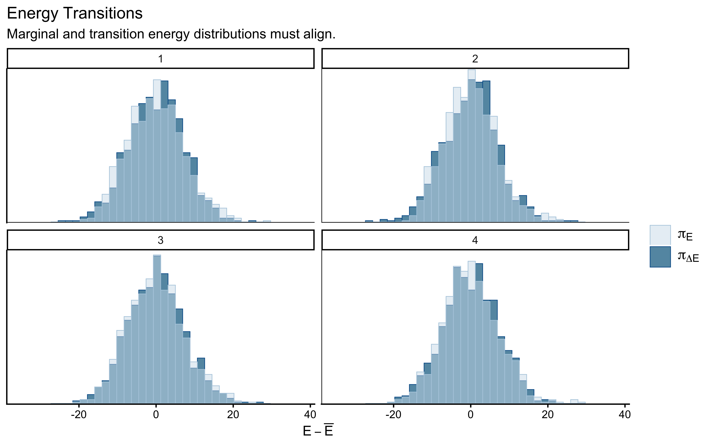
If the model geometry is well-behaved, the energy transition distribution (the energy proposed by the momentum resampling) will neatly match the marginal energy distribution (the actual energy of the posterior). An E-BFMI below 0.2 indicates the sampler is taking tiny, localized steps and failing to explore the global geometry.
7.4.4 Prior-Posterior Update Checks: Quantifying Learning
Bayesian inference is the mathematical process of allocating credibility across parameter values. The posterior is simply the prior updated by the likelihood. If the posterior is identical to the prior, the data contained no information. If the posterior is violently pushed against the boundaries of the prior, our priors were likely misspecified.
Let us visualize how much the data narrowed our uncertainty about the population parameters. Because we explicitly generated prior draws in our Stan generated quantities block, this comparison is trivial.
# Extract prior and posterior draws for the population mean and variance
draws_df <- as_draws_df(draws_cp)
# Reshape for ggplot
pp_update_data <- draws_df |>
select(
mu_posterior = mu_theta, mu_prior = mu_theta_prior,
sigma_posterior = sigma_theta, sigma_prior = sigma_theta_prior
) |>
pivot_longer(everything(), names_to = c("parameter", "distribution"), names_sep = "_")
# Extract the true generative hyperparameters we saved as attributes
true_mu <- attr(sim_data_centered, "hyperparameters")$mu_theta
true_sigma <- attr(sim_data_centered, "hyperparameters")$sigma_theta
# Create a reference dataframe for the ground truth matching the facet names
true_pop_df <- tibble(
parameter = c("mu", "sigma"),
true_value = c(true_mu, true_sigma)
)
# Visualize the update
ggplot(pp_update_data, aes(x = value)) +
geom_histogram(aes(fill = distribution), alpha = 0.6, color = NA) +
# Add the true values as dashed lines
geom_vline(data = true_pop_df, aes(xintercept = true_value, linetype = "True Value"),
color = "darkred", linewidth = 1) +
facet_wrap(
~parameter,
scales = "free",
# Clean up the facet labels for publication quality
labeller = as_labeller(c("mu" = "Population Mean (\u03BC)", "sigma" = "Population SD (\u03C3)"))
) +
scale_fill_manual(
name = "Distribution",
values = c("prior" = "gray70", "posterior" = "steelblue")
) +
scale_linetype_manual(
name = "Ground Truth",
values = c("True Value" = "dashed")
) +
labs(
title = "Prior-Posterior Update Checks: Population Hyperparameters",
subtitle = "Healthy = posterior (blue) narrower than prior (grey) and centred on true value (dashed red).",
x = "Parameter Value (Logit Scale)",
y = "Density")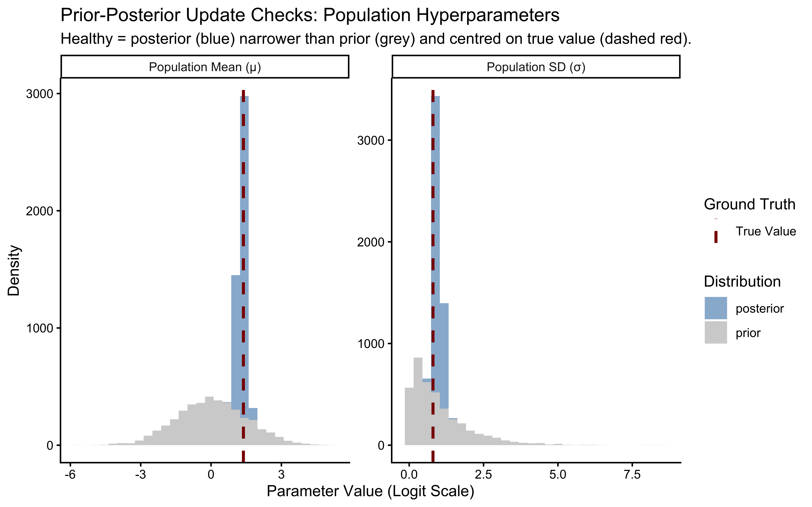
A healthy update shows a posterior that is significantly narrower than the prior (indicating learning) and comfortably contained within the prior’s mass (indicating the prior did not inappropriately censor the likelihood).
7.4.5 Posterior Parameter Correlations
Parameters in hierarchical models are structurally correlated. By plotting the joint posterior geometry of multiple parameters, we can detect pathological collinearity or explicitly visualize the boundary of possible Neal’s Funnel.
We will use a pairs plot to examine the joint distribution of the population mean (\(\mu_\theta\)), population standard deviation (\(\sigma_\theta\)), and a single agent’s latent bias (\(\theta_{\text{logit}, 1}\)).
# Visualize joint posterior geometries and identify structural correlations
mcmc_pairs(
draws_cp,
pars = c("mu_theta", "sigma_theta", "theta_logit[1]"),
np = nuts_params(fit_cp), # Injects divergence data (red crosses) if any exist
diag_fun = "dens",
off_diag_fun = "hex"
)
7.4.6 Posterior Predictive Checks (PPC): Generative Adequacy
Can our fitted model actually generate the reality we observed? If we simulate data from the posterior distribution, does it look like the empirical data? If not, the model is structurally misspecified, regardless of how well the chains mixed.
We will compare the observed choice rate for each agent against the distribution of choice rates predicted by the posterior.
# Safely extract vectors
y_obs <- as.numeric(stan_data_centered$h)
agent_idx <- as.numeric(stan_data_centered$agent)
# Use cmdstanr's native extraction to guarantee a strict S x N matrix
y_rep <- fit_cp$draws("h_post_rep", format = "matrix")
# Select a random subset of agents to avoid overcrowded, illegible plots
n_sample <- 12
sampled_agents <- sample(unique(agent_idx), n_sample)
# Create a logical mask mapping which trials belong to the sampled agents
keep_mask <- agent_idx %in% sampled_agents
# Subset the data exactly
y_obs_sub <- y_obs[keep_mask]
agent_idx_sub <- agent_idx[keep_mask]
# For y_rep, we subset the columns (trials)
y_rep_sub <- y_rep[ , keep_mask]
# Define a custom statistic to explicitly state our cognitive metric
# (and simultaneously silence the bayesplot warning)
prop_right <- function(x) mean(x)
# Execute the grouped Posterior Predictive Check
ppc_stat_grouped(
y = y_obs_sub,
yrep = y_rep_sub,
group = agent_idx_sub,
stat = "prop_right"
) +
labs(
title = "Posterior Predictive Check: Agent-Level Choice Rates",
subtitle = paste0("Healthy = dark line (observed) inside histogram (predicted). Showing ", n_sample, " agents."),
x = "Proportion of 'Right' Choices"
)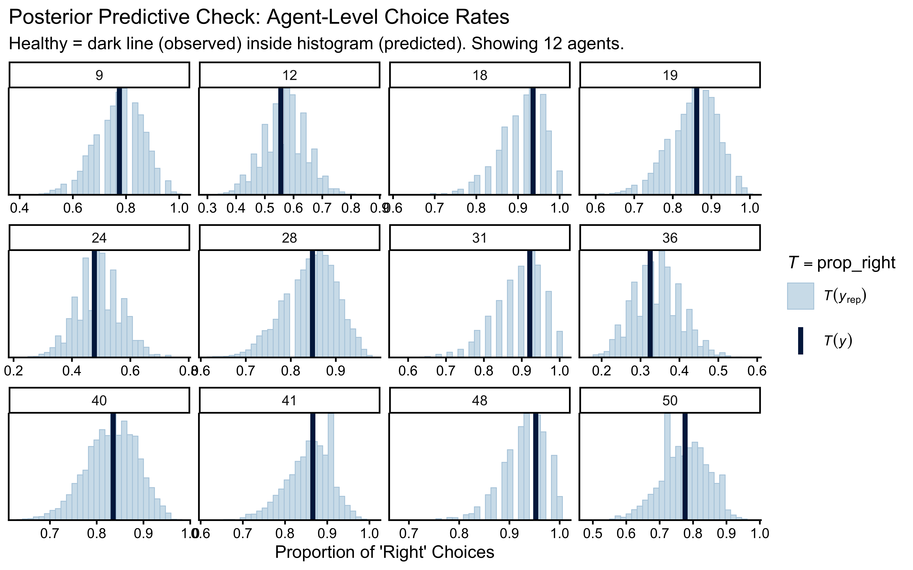
7.4.7 Calibration and Recovery
We have proven the model fits the data and generates plausible predictions. Now, we must prove that the parameters we extract are actually the true parameters that generated the data. Because this is a hierarchical model, we must assess recovery at both the population and individual levels.
7.4.7.1 Individual-Level Recovery
Having validated the top of the hierarchy (in the prior-posterior update check), we move to the individual agents. We plot the posterior estimates against the ground truth. We expect the estimates to align with the diagonal identity line, but crucially, we expect agents with fewer trials to deviate from the raw truth, demonstrating shrinkage toward the estimated population mean.
# 1. Extract the full summary (which defaults to including median, q5, and q95)
recovery_summary <- draws_cp |>
posterior::subset_draws(variable = "theta_logit") |>
posterior::summarise_draws() |>
mutate(agent_id = as.integer(str_extract(variable, "(?<=\\[)\\d+(?=\\])")))
# 2. Extract the true generative parameters directly from the simulated dataset
true_agent_params <- sim_data_centered |>
distinct(agent_id, n_trials, theta_logit, theta_prob)
# 3. Join the posterior estimates with the ground truth
recovery_df <- true_agent_params |>
left_join(recovery_summary, by = "agent_id")
# 4. Plot Recovery with Shrinkage Dynamics
ggplot(recovery_df, aes(x = theta_logit, y = median)) +
geom_abline(intercept = 0, slope = 1, linetype = "dashed", color = "gray50") +
geom_errorbar(aes(ymin = q5, ymax = q95), width = 0, alpha = 0.5, color = "steelblue") +
geom_point(aes(size = n_trials), color = "midnightblue", alpha = 0.8) +
labs(
title = "Parameter Recovery: Hierarchical Biased Agent",
subtitle = "Healthy = points near diagonal (y = x). Small dots shrink more — that is partial pooling working correctly.",
x = "True Parameter Value (Logit Scale)",
y = "Posterior Median Estimate (Logit Scale)",
size = "Number of Trials (N_j)"
)
7.4.8 Prior sensitivity
# 1. Calculate the sensitivity diagnostics
# We target the hyperparameters, as they govern the hierarchical shrinkage
sens_results <- powerscale_sensitivity(
fit_cp, # or fit_ncp, provided lprior is defined
variable = c("mu_theta", "sigma_theta")
)
cat("=== PRIOR SENSITIVITY DIAGNOSTICS ===\n")## === PRIOR SENSITIVITY DIAGNOSTICS ===## Sensitivity based on cjs_dist
## Prior selection: all priors
## Likelihood selection: all data
##
## variable prior likelihood diagnosis
## mu_theta 0.165 0.050 potential strong prior / weak likelihood
## sigma_theta 0.354 0.091 potential prior-data conflictps_seq <- priorsense::powerscale_sequence(
fit_cp,
variable = c("mu_theta", "sigma_theta")
)
# Plot the density shifts
priorsense::powerscale_plot_dens(ps_seq) +
theme_classic() +
labs(
title = "Prior Sensitivity: Density Perturbation",
subtitle = "Does scaling the prior/likelihood drastically alter our geometric beliefs?"
)
# Plot the quantitative estimate shifts
priorsense::powerscale_plot_quantities(ps_seq) +
theme_classic() +
labs(
title = "Prior Sensitivity: Parameter Estimates",
subtitle = "Horizontal lines indicate the baseline posterior bounds. Deviations indicate sensitivity."
)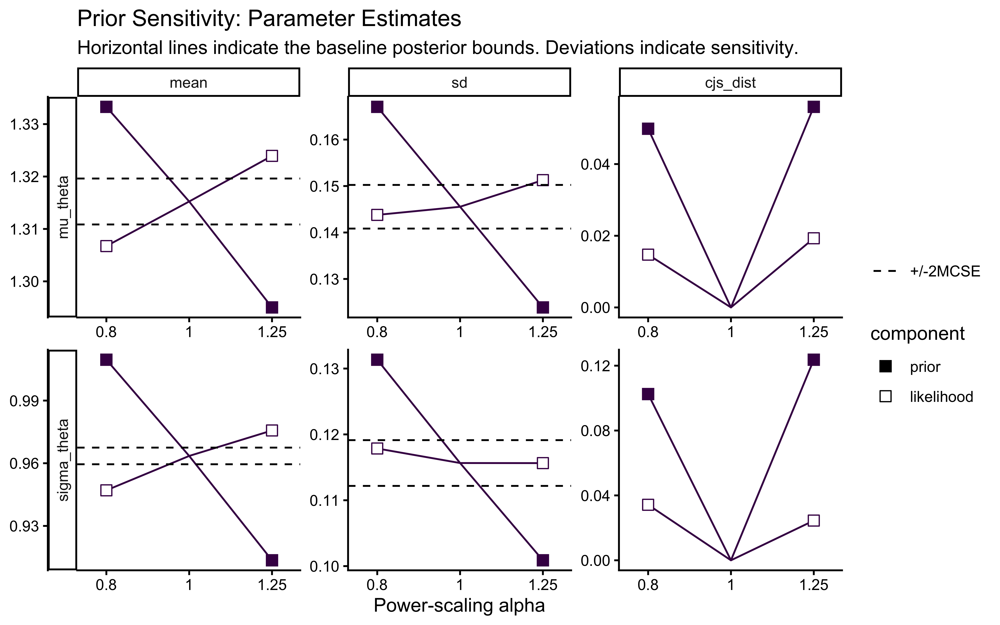
The sensitivity analysis reveals that our population variance (\(\sigma_\theta\)) exhibits a prior-data conflict. This is a feature, not a bug, of partial pooling: our Exponential prior applies regularizing pressure toward zero variance (complete pooling), while the empirical data resists this pull to account for individual differences.
7.4.9 Simulation-Based Calibration (SBC)
Parameter recovery on a single dataset is anecdotal. A single success might just mean we got lucky with a benign region of the parameter space. To mathematically guarantee that our NUTS sampler is unbiased and our posterior uncertainties are perfectly calibrated across the entire prior space, we must perform Simulation-Based Calibration (SBC). The logic of SBC is structurally elegant: if we generate a ground-truth parameter \(\theta_{\text{true}}\) from the prior, generate data from the likelihood conditional on \(\theta_{\text{true}}\), and compute the posterior, then the posterior must not systematically over- or under-estimate \(\theta_{\text{true}}\). Under a well-calibrated sampler, the rank of the true parameter value within the sorted posterior draws will be uniformly distributed:\[r \sim \text{Uniform}(0, S)\]where \(S\) is the number of posterior samples. If the model is overconfident (the posterior is too narrow and misses the truth), the rank histogram will be U-shaped. If it is underconfident (the posterior is too wide), it will form an inverted U-shape. Asymmetries indicate directional bias.
7.4.10 Setting up the SBC Pipeline
The SBC package requires a strict data structure. It expects a generator function that returns a list of two components:
variables: A named list of the true parameter values.
generated: The formatted data list required by our Stan model.
Let us build a strict wrapper around our simulation and data preparation functions to satisfy this requirement.
# Define the strict SBC generator wrapper
generate_sbc_dataset <- function(n_agents = 50, n_trials_min = 20, n_trials_max = 120) {
# 1. Simulate the universe (draws hyperparams and agent params from priors)
sim_data <- simulate_hierarchical_biased(
n_agents = n_agents,
n_trials_min = n_trials_min,
n_trials_max = n_trials_max
)
# 2. Extract the true generative hyperparameters
mu_true <- attr(sim_data, "hyperparameters")$mu_theta
sigma_true <- attr(sim_data, "hyperparameters")$sigma_theta
# 3. Extract the true individual latent parameters (must preserve agent order)
theta_true <- sim_data |>
distinct(agent_id, theta_logit) |>
arrange(agent_id) |>
pull(theta_logit)
# 4. Prepare the strictly typed list for CmdStanR
stan_data <- prep_stan_data(sim_data)
# 5. Return the exact structure required by the SBC package
list(
variables = list(
mu_theta = mu_true,
sigma_theta = sigma_true,
theta_logit = theta_true
),
generated = stan_data
)
}A production-grade SBC requires \(N_{\text{sim}} \ge 1000\) to smooth the rank histograms. For computational feasibility in this chapter, we will run 200 simulations. Because we established our future parallel processing plan in the setup chunk, the SBC package will automatically distribute these models across your CPU cores.
sbc_cp_path <- here::here("simmodels", "ch6_sbc_cp.rds")
generator_cp <- SBC_generator_function(
generate_sbc_dataset,
n_agents = 50, n_trials_min = 30, n_trials_max = 120
)
backend_cp <- SBC_backend_cmdstan_sample(
mod_biased_ml_cp,
iter_warmup = 1000, iter_sampling = 1000, chains = 1, refresh = 0
)
if (regenerate_simulations || !file.exists(sbc_cp_path)) {
future::plan(future::sequential)
sbc_datasets_cp <- generate_datasets(generator_cp, 200)
sbc_results_cp <- compute_SBC(datasets = sbc_datasets_cp, backend = backend_cp,
keep_fits = FALSE)
saveRDS(
list(datasets = sbc_datasets_cp, results = sbc_results_cp),
sbc_cp_path
)
} else {
sbc_obj <- readRDS(sbc_cp_path)
sbc_datasets_cp <- sbc_obj$datasets
sbc_results_cp <- sbc_obj$results
}
# Visualize
plot_rank_hist(sbc_results_cp, variables = c("mu_theta", "sigma_theta")) +
labs(
title = "SBC Rank Histograms: Centered Parameterization",
subtitle = "Healthy = bars flat within grey band. U-shape = overconfident. Here, U-shapes reveal the funnel pathology."
)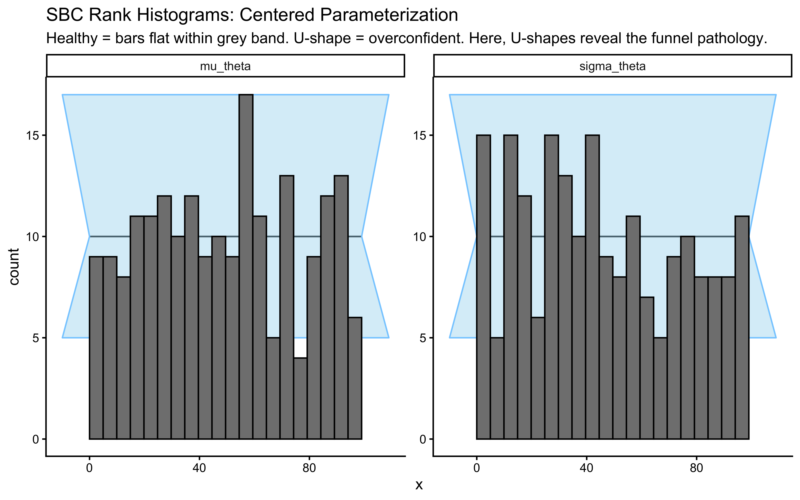
plot_ecdf_diff(sbc_results_cp, variables = c("mu_theta", "sigma_theta")) +
labs(
title = "SBC ECDF Difference: Centered Parameterization",
subtitle = "Healthy = blue line stays near zero. Excursions here correlate with the divergence failures shown below."
)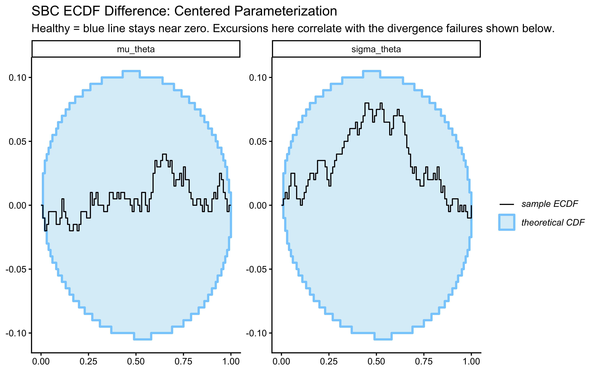
# 1. Extract the lightweight stats dataframe from the SBC object
sbc_stats_df <- sbc_results_cp$stats
# 2. Filter for the population-level parameters you care about
# (e.g., mu_alpha, mu_beta, rho, or even sigma[1])
recovery_df <- sbc_stats_df |>
filter(variable %in% c("mu_theta"))
# 3. Create the Parameter Recovery Identity Plot
p_sbc_recovery <- ggplot(recovery_df, aes(x = simulated_value, y = median)) +
# The Identity Line (Perfect Recovery)
geom_abline(intercept = 0, slope = 1, linetype = "dashed", color = "gray50", linewidth = 1) +
# The Posterior Estimates with 90% Credible Intervals
geom_errorbar(aes(ymin = q5, ymax = q95), width = 0, alpha = 0.3, color = "steelblue") +
geom_point(color = "midnightblue", alpha = 0.7, size = 2) +
# Facet by parameter
facet_wrap(~variable, scales = "free") +
labs(
title = "Parameter Recovery (Extracted Directly from SBC)",
subtitle = "Points represent the posterior median. Bars are 90% Credible Intervals.",
x = "True Generative Value (Drawn from Prior)",
y = "Posterior Median Estimate"
) +
theme_classic() +
theme(strip.background = element_rect(fill = "gray95", color = NA))
print(p_sbc_recovery)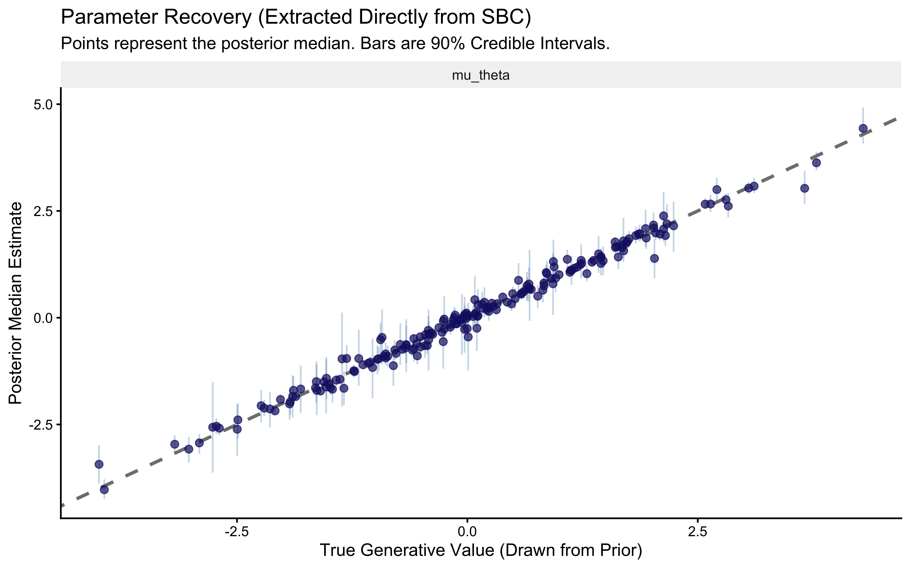
# 4. Quantify the Recovery (Correlation and RMSE)
recovery_metrics <- recovery_df |>
group_by(variable) |>
summarize(
Pearson_r = cor(simulated_value, median),
Spearman_rho = cor(simulated_value, median, method = "spearman"),
RMSE = sqrt(mean((simulated_value - median)^2)),
.groups = "drop"
)
cat("=== PARAMETER RECOVERY QUANTIFICATION ===\n")## === PARAMETER RECOVERY QUANTIFICATION ===##
##
## |variable | Pearson_r| Spearman_rho| RMSE|
## |:--------|---------:|------------:|-----:|
## |mu_theta | 0.994| 0.993| 0.162|Let’s explore the warnings we got.
# Extract diagnostics now so they are available for the targeted refit below
diags_cp <- sbc_results_cp$backend_diagnostics
cp_fail_rate <- mean(diags_cp$n_divergent > 0) * 100
# Divergence count distribution across all 200 universes
diags_cp |>
ggplot(aes(x = n_divergent)) +
geom_histogram(binwidth = 1, fill = "darkred", alpha = 0.8) +
labs(
title = "CP Divergence Counts Across 200 SBC Universes",
subtitle = sprintf("%.0f%% of universes produced at least one divergence.
Even a single divergence invalidates the geometric guarantee of NUTS.", cp_fail_rate),
x = "Number of Divergent Transitions",
y = "Number of SBC Universes"
)
# Locate the divergence-prone region: do they concentrate at small sigma_theta?
divergence_profile <- posterior::as_draws_df(sbc_datasets_cp$variables) |>
as_tibble() |>
mutate(sim_id = row_number()) |>
left_join(
diags_cp |> mutate(sim_id = row_number()) |> select(sim_id, n_divergent),
by = "sim_id"
) |>
mutate(had_divergence = n_divergent > 0)
ggplot(divergence_profile, aes(x = sigma_theta, y = n_divergent, color = had_divergence)) +
geom_point(alpha = 0.5, size = 1.5) +
scale_color_manual(
values = c("FALSE" = "steelblue", "TRUE" = "darkred"),
labels = c("FALSE" = "Clean", "TRUE" = "Divergent"),
name = NULL
) +
labs(
title = "CP Divergences Concentrate at Small True sigma_theta",
subtitle = "The funnel geometry only manifests when population variance is small.",
x = expression("True " * sigma[theta]),
y = "Number of Divergent Transitions"
)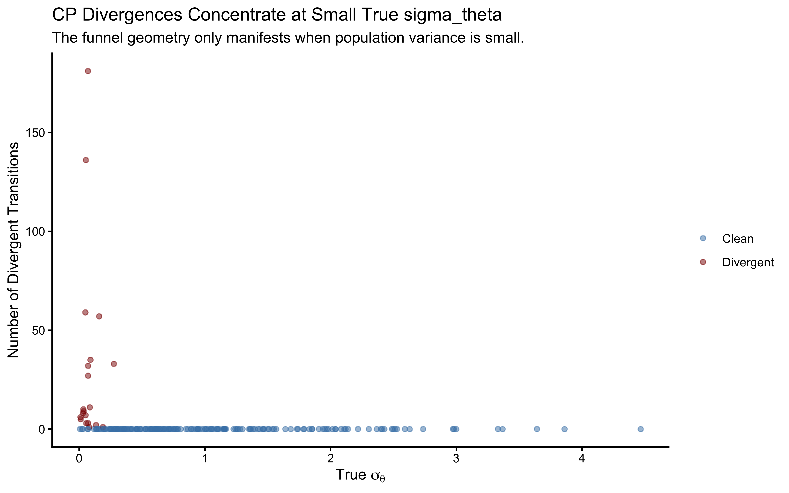
ggplot(divergence_profile, aes(x = mu_theta, y = sigma_theta, color = had_divergence)) +
geom_point(alpha = 0.7, size = 2) +
scale_color_manual(
name = "Sampler Status",
values = c("FALSE" = "steelblue", "TRUE" = "darkred"),
labels = c("Healthy", "Diverged")
) +
labs(
title = "The Anatomy of Failure: Where does CP break?",
x = "True Population Mean (mu_theta)",
y = "True Population Variance (sigma_theta)"
) +
theme_classic()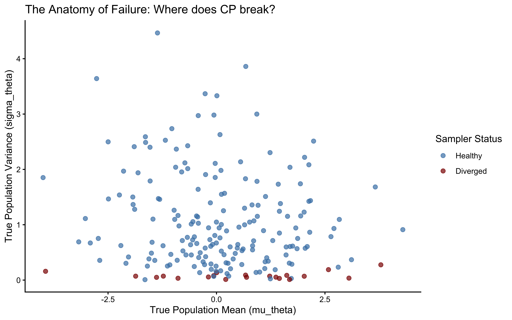
hard_universe_path <- here::here("simmodels", "ch6_fit_cp_hard.rds")
hard_universe_idx <- divergence_profile |>
filter(had_divergence) |>
slice_min(sigma_theta, n = 1) |>
pull(sim_id)
hard_stan_data <- sbc_datasets_cp$generated[[hard_universe_idx]]
hard_true_sigma <- divergence_profile$sigma_theta[hard_universe_idx]
cat(sprintf(
"Selected universe %d: true sigma_theta = %.3f\n",
hard_universe_idx, hard_true_sigma
))## Selected universe 143: true sigma_theta = 0.011if (regenerate_simulations || !file.exists(hard_universe_path)) {
fit_cp_hard <- mod_biased_ml_cp$sample(
data = hard_stan_data,
seed = 999,
chains = 4,
parallel_chains = 4,
iter_warmup = 1000,
iter_sampling = 1000,
init = init_cp_list,
adapt_delta = 0.85,
refresh = 0
)
fit_cp_hard$save_object(hard_universe_path)
} else {
fit_cp_hard <- readRDS(hard_universe_path)
}
# 1. Generate the pairs plot
p_funnel <- mcmc_pairs(
fit_cp_hard$draws(),
pars = c("mu_theta", "sigma_theta", "theta_logit[1]"),
np = nuts_params(fit_cp_hard),
np_style = pairs_style_np(div_color = "darkred", div_alpha = 0.8, div_size = 2),
diag_fun = "dens",
off_diag_fun = "hex"
)
wrap_elements(p_funnel) +
plot_annotation(
title = sprintf("Neal's Funnel: CP Geometry at True sigma_theta = %.3f", hard_true_sigma),
subtitle = "Red points are divergent transitions crashing at the funnel neck."
)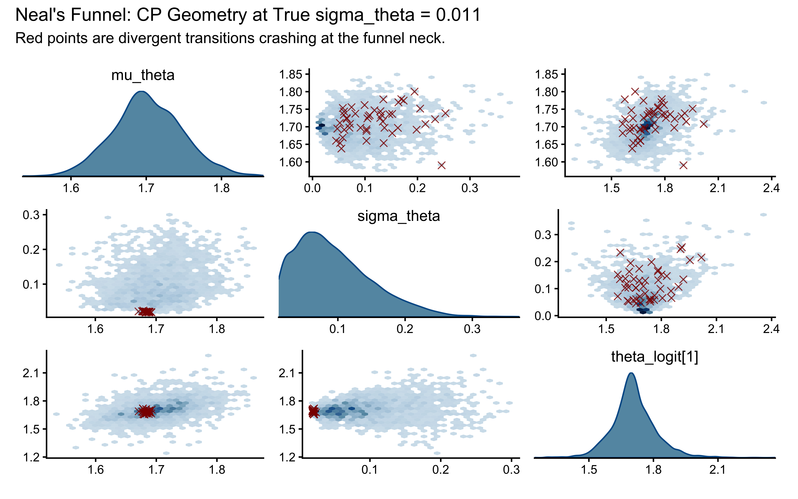
Here we see a funnel. As sigma goes to zero, theta_logit[1] can only have one value: the value of the population (mu_theta). The curvature becomes infinitely steep, and the NUTS sampler fails to explore this region, resulting in divergent transitions (red points). This is the geometric pathology of the Centered Parameterization.
7.4.11 Non-Centered Parameterization (NCP) as the Solution
Why does a coordinate transform fix a geometry problem? Neal’s Funnel is not a flaw in the model — it is a flaw in the space the sampler must navigate. In the CP, individual parameters \(\theta_j\) live in a space whose width is controlled by \(\sigma_\theta\): as \(\sigma_\theta \to 0\) the space collapses. In the NCP, we sample standardized offsets \(z_j \sim N(0,1)\) whose geometry is always the same — the funnel disappears because the sampler no longer navigates the narrowing space directly. The parameters \(\theta_j\) are reconstructed after sampling, not during it.
We have reached a critical juncture in our Bayesian workflow. We showed computationally (via SBC and diagnostic pairs plots) that the Centered Parameterization (CP) creates a pathological geometry—Neal’s Funnel—that makes it difficult for the NUTS sampler to efficiently traverse the posterior space when data is sparse or population variance is small. When the model is misbehaving, sometimes we need to reconsider our theory and/or our data. Yet, in this case, we can do something to the math underlying the model to topologically transform the posterior space the model is sampling: a coordinate transformation known as the Non-Centered Parameterization (NCP).
7.4.11.1 The Geometry of the Transformation
In the Centered Parameterization, the hierarchical dependency is explicit and direct:\[\theta_{\text{logit}, j} \sim \text{Normal}(\mu_\theta, \sigma_\theta)\] This forces the sampler to navigate a space where the permissible bounds of \(\theta\) are dynamically restricted by \(\sigma\), creating the funnel. In the Non-Centered Parameterization, we decouple this dependency, in a way that is not dissimilar from rescaling your predictors - a common procedure you probably learned in your statistical course to help model convergence and interpretation.
We introduce an auxiliary, standardized latent variable \(z_j\) for each agent. We force the sampler to explore this \(z\)-space, which is simply a perfectly behaved Normal distribution:\[z_j \sim \text{Normal}(0, 1)\] Then, we deterministically shift and scale \(z_j\) to reconstruct our target cognitive parameter:\[\theta_{\text{logit}, j} = \mu_\theta + z_j \times \sigma_\theta\]
Mathematically, this is identical to the CP (\(z \sim N(0,1) \implies \mu + z\sigma \sim N(\mu, \sigma)\)). However, the computational geometry is entirely transformed and when the sampler traverses it, the problems it meets are likely different.
7.4.12 Stan Model: Multilevel Biased Agent (NCP)
Here is the NCP version of the model. Note the changes in the parameters, transformed parameters, and model blocks compared to the CP version.
stan_biased_ml_ncp_code <- '
// Multilevel Biased Agent Model (Non-Centered Parameterization)
// Estimates individual biases drawn from a population distribution.
data {
int<lower=1> N; // Total number of observations
int<lower=1> J; // Number of agents
array[N] int<lower=1, upper=J> agent; // Agent ID for each observation (must be 1...J)
array[N] int<lower=0, upper=1> h; // Observed choices (0 or 1)
}
parameters {
// Population-level parameters
real mu_theta; // Population mean bias (logit scale)
real<lower=0> sigma_theta; // Population SD of bias (logit scale)
// Individual-level parameters (standardized deviations, z-scores of the agents)
vector[J] z_theta; // Non-centered individual effects (standard normal scale)
}
transformed parameters {
// Deterministic reconstruction of the cognitive parameters
// This shifts and scales the z-scores back to the target logit space
vector[J] theta_logit = mu_theta + z_theta * sigma_theta;
}
model {
// Priors for population-level parameters
target += normal_lpdf(mu_theta | 0, 1.5);
target += exponential_lpdf(sigma_theta | 1);
/// Individual level prior (NON-CENTERED)
// Notice there are no population level parameters here. The geometry is decoupled.
target += std_normal_lpdf(z_theta);
// Likelihood
/// The likelihood is evaluated on the deterministically transformed parameters
/// not the raw z-scores.
target += bernoulli_logit_lpmf(h | theta_logit[agent]);
}
generated quantities {
// Transform hyperparameters back to the probability (outcome) scale
real<lower=0, upper=1> mu_theta_prob = inv_logit(mu_theta);
vector<lower=0, upper=1>[J] theta_prob = inv_logit(theta_logit);
// Initialize containers for trial-level metrics
vector[N] log_lik;
array[N] int h_post_rep;
array[N] int h_prior_rep;
// --- Prior Log-Density ---
real lprior;
// Notice we score z_theta with the standard normal distribution, exactly as in the model block
lprior = normal_lpdf(mu_theta | 0, 1.5) +
exponential_lpdf(sigma_theta | 1) +
std_normal_lpdf(z_theta);
// --- Prior Predictive Checks: Generative Baseline ---
// 1. Draw population hyperparameters from the EXACT priors used in the model block
real mu_theta_prior = normal_rng(0, 1.5);
real<lower=0> sigma_theta_prior = exponential_rng(1);
// 2. Draw individual agent parameters from the non-centered prior
vector[J] theta_logit_prior;
for (j in 1:J) {
real z_theta_prior = normal_rng(0, 1);
theta_logit_prior[j] = mu_theta_prior + z_theta_prior * sigma_theta_prior;
}
// --- Trial-Level Computations ---
// We consolidate the log-likelihood and predictive checks into a single loop
for (i in 1:N) {
// 1. Pointwise log-likelihood (for PSIS-LOO model comparison later)
log_lik[i] = bernoulli_logit_lpmf(h[i] | theta_logit[agent[i]]);
// 2. Posterior Predictive Check: Generate choices using the fitted posterior
h_post_rep[i] = bernoulli_logit_rng(theta_logit[agent[i]]);
// 3. Prior Predictive Check: Generate choices using the unconditioned prior
h_prior_rep[i] = bernoulli_logit_rng(theta_logit_prior[agent[i]]);
}
}'
# Write Stan code to file
stan_file_ncp <- here::here("stan", "ch6_multilevel_biased_ncp.stan")
writeLines(stan_biased_ml_ncp_code, stan_file_ncp)
mod_biased_ml_ncp <- cmdstan_model(stan_file_ncp)
fit_ncp_path <- here::here("simmodels", "ch6_fit_ncp.rds")
# Extract J safely
J_val_ncp <- stan_data_centered$J
# The dumb list (4 chains)
init_ncp_list <- list(
list(mu_theta = rnorm(1, 0, 1.5), sigma_theta = rexp(1, 1), z_theta = rnorm(J_val_ncp, 0, 1)),
list(mu_theta = rnorm(1, 0, 1.5), sigma_theta = rexp(1, 1), z_theta = rnorm(J_val_ncp, 0, 1)),
list(mu_theta = rnorm(1, 0, 1.5), sigma_theta = rexp(1, 1), z_theta = rnorm(J_val_ncp, 0, 1)),
list(mu_theta = rnorm(1, 0, 1.5), sigma_theta = rexp(1, 1), z_theta = rnorm(J_val_ncp, 0, 1))
)
if (regenerate_simulations || !file.exists(fit_ncp_path)) {
fit_ncp <- mod_biased_ml_ncp$sample(
data = stan_data_centered,
seed = 123,
chains = 4,
parallel_chains = 4,
iter_warmup = 1000,
iter_sampling = 1000,
init = init_ncp_list, # <--- Pass the dumb list here
adapt_delta = 0.85,
refresh = 0
)
fit_ncp$save_object(fit_ncp_path)
} else {
fit_ncp <- readRDS(fit_ncp_path)
}Why we skip the full diagnostic battery here: The NCP model is not our production model for this dataset — it is a pedagogical fix. We introduced the CP model specifically to watch it fail via SBC, and the NCP to demonstrate the geometric solution. Running the full six-phase battery (prior predictive, posterior predictive, prior-posterior update, sensitivity, recovery, SBC) on both parameterizations would be instructive but redundant for this chapter’s purpose. When you apply the NCP to your own data, run all six phases. Here we focus on the two diagnostics that directly reveal the CP’s failure and the NCP’s fix: sampling efficiency and the SBC rank histograms.
# Timing and ESS comparison
time_cp <- fit_cp$time()$total
time_ncp <- fit_ncp$time()$total
ess_cp <- summarise_draws(fit_cp$draws(c("mu_theta", "sigma_theta")), "ess_bulk") |> rename(ess_cp = ess_bulk)
ess_ncp <- summarise_draws(fit_ncp$draws(c("mu_theta", "sigma_theta")), "ess_bulk") |> rename(ess_ncp = ess_bulk)
efficiency_comparison <- ess_cp |>
left_join(ess_ncp, by = "variable") |>
mutate(
ess_per_sec_cp = ess_cp / time_cp,
ess_per_sec_ncp = ess_ncp / time_ncp
)
cat("=== COMPUTATIONAL SPEED (WALL-CLOCK) ===\n")## === COMPUTATIONAL SPEED (WALL-CLOCK) ===## CP Total Time: 4.67 seconds## NCP Total Time: 5.68 seconds## Speedup Factor: 0.82 x## === SAMPLING EFFICIENCY (ESS / SECOND) ===##
##
## |variable | ess_cp| ess_ncp| ess_per_sec_cp| ess_per_sec_ncp|
## |:-----------|------:|-------:|--------------:|---------------:|
## |mu_theta | 4407.2| 435.9| 943.2| 76.8|
## |sigma_theta | 3472.6| 735.7| 743.2| 129.5|Here we are seeing that the NCP model is sometimes slightly faster, sometimes slightly slower, but always less efficient at sampling than the CP model. There goes any simple guideline that NCP is more efficient :-)
Yet, NCP might still end up exploring the space better. Let’s see how it fares on the SBC assessment that was giving issues to CP.
We will generate 200 random universes from the priors, fit the NCP model to each, and plot the rank histograms.
sbc_ncp_path <- here::here("simmodels", "ch6_sbc_ncp.rds")
backend_ncp <- SBC_backend_cmdstan_sample(
mod_biased_ml_ncp,
iter_warmup = 1000, iter_sampling = 1000, chains = 1, refresh = 0
)
if (regenerate_simulations || !file.exists(sbc_ncp_path)) {
future::plan(future::sequential) # to avoid ram issues
# Add keep_fits = FALSE right here
sbc_results_ncp <- compute_SBC(
datasets = sbc_datasets_cp,
backend = backend_ncp,
keep_fits = FALSE
)
saveRDS(sbc_results_ncp, sbc_ncp_path)
} else {
sbc_results_ncp <- readRDS(sbc_ncp_path)
}
plot_rank_hist(sbc_results_ncp, variables = c("mu_theta", "sigma_theta")) +
labs(title = "SBC Rank Histograms: Non-Centered Parameterization")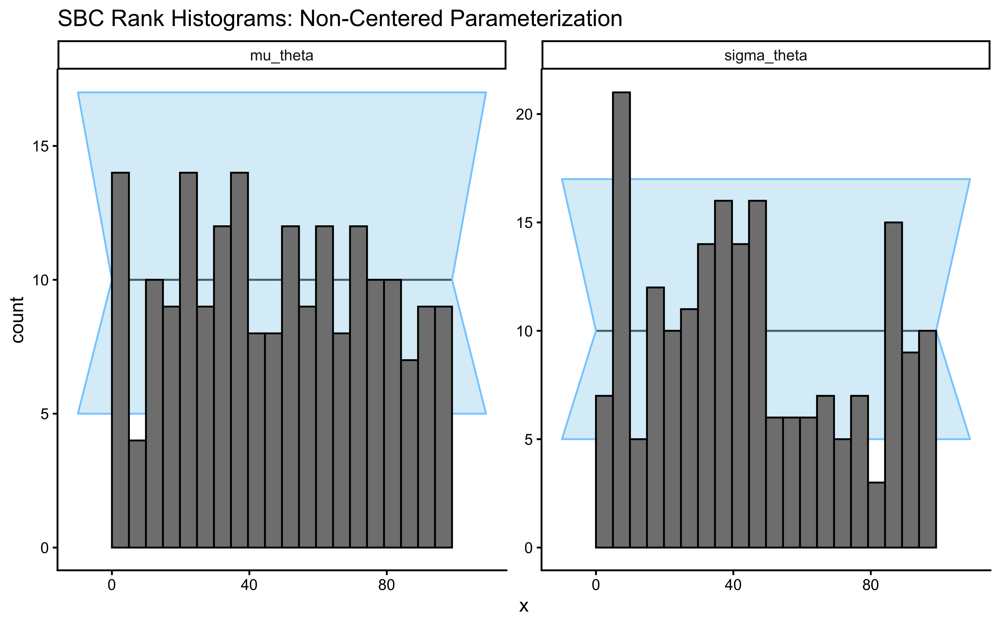
sbc_stats_df <- sbc_results_cp$stats
# 2. Filter for the population-level parameters you care about
# (e.g., mu_alpha, mu_beta, rho, or even sigma[1])
recovery_df <- sbc_stats_df |>
filter(variable %in% c("mu_theta", "sigma_theta"))
# 3. Create the Parameter Recovery Identity Plot
p_sbc_recovery <- ggplot(recovery_df, aes(x = simulated_value, y = median)) +
# The Identity Line (Perfect Recovery)
geom_abline(intercept = 0, slope = 1, linetype = "dashed", color = "gray50", linewidth = 1) +
# The Posterior Estimates with 90% Credible Intervals
geom_errorbar(aes(ymin = q5, ymax = q95), width = 0, alpha = 0.3, color = "steelblue") +
geom_point(color = "midnightblue", alpha = 0.7, size = 2) +
# Facet by parameter
facet_wrap(~variable, scales = "free") +
labs(
title = "Parameter Recovery (Extracted Directly from SBC)",
subtitle = "Points represent the posterior median. Bars are 90% Credible Intervals.",
x = "True Generative Value (Drawn from Prior)",
y = "Posterior Median Estimate"
) +
theme_classic() +
theme(strip.background = element_rect(fill = "gray95", color = NA))
print(p_sbc_recovery)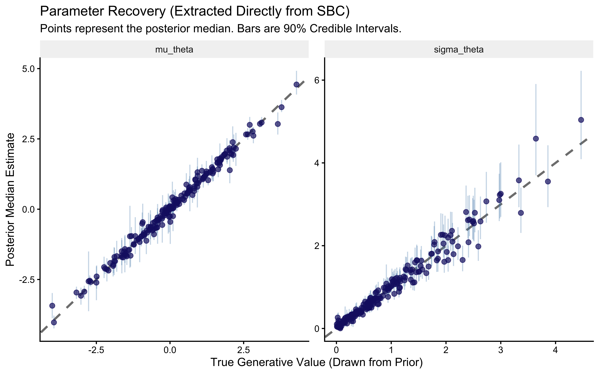
# 4. Quantify the Recovery (Correlation and RMSE)
recovery_metrics <- recovery_df |>
group_by(variable) |>
summarize(
Pearson_r = cor(simulated_value, median),
Spearman_rho = cor(simulated_value, median, method = "spearman"),
RMSE = sqrt(mean((simulated_value - median)^2)),
.groups = "drop"
)
cat("=== PARAMETER RECOVERY QUANTIFICATION ===\n")## === PARAMETER RECOVERY QUANTIFICATION ===##
##
## |variable | Pearson_r| Spearman_rho| RMSE|
## |:-----------|---------:|------------:|-----:|
## |mu_theta | 0.994| 0.993| 0.162|
## |sigma_theta | 0.982| 0.988| 0.172|# Extract diagnostics now so they are available for the targeted refit below
diags_ncp <- sbc_results_ncp$backend_diagnostics
ncp_fail_rate <- mean(diags_ncp$n_divergent > 0) * 100
# Divergence count distribution across all 200 universes
diags_ncp |>
ggplot(aes(x = n_divergent)) +
geom_histogram(binwidth = 1, fill = "darkred", alpha = 0.8) +
labs(
title = "NCP Divergence Counts Across 200 SBC Universes",
subtitle = sprintf("%.0f%% of universes produced at least one divergence.
Even a single divergence invalidates the geometric guarantee of NUTS.", cp_fail_rate),
x = "Number of Divergent Transitions",
y = "Number of SBC Universes"
)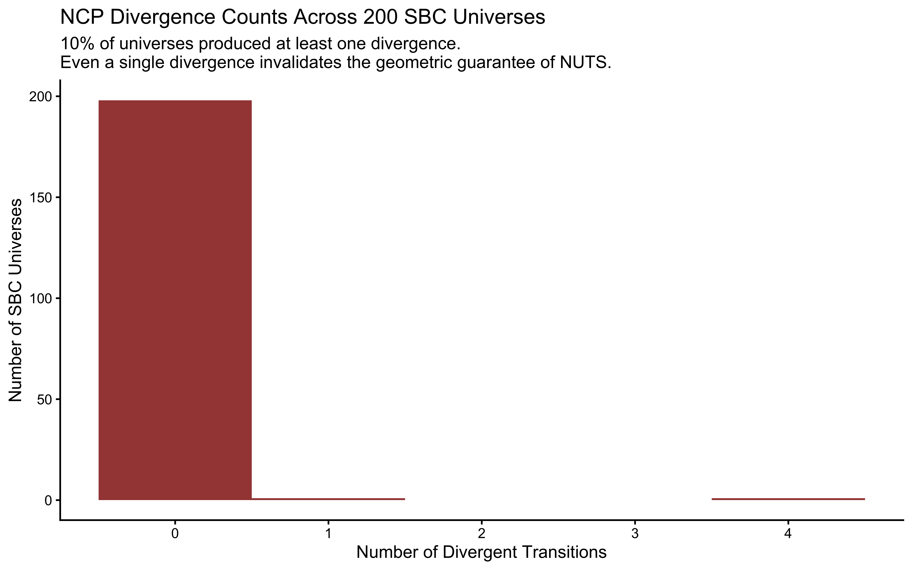
# Locate the divergence-prone region: do they concentrate at small sigma_theta?
divergence_profile <- posterior::as_draws_df(sbc_datasets_cp$variables) |>
as_tibble() |>
mutate(sim_id = row_number()) |>
left_join(
diags_ncp |> mutate(sim_id = row_number()) |> select(sim_id, n_divergent),
by = "sim_id"
) |>
mutate(had_divergence = n_divergent > 0)
ggplot(divergence_profile, aes(x = sigma_theta, y = n_divergent, color = had_divergence)) +
geom_point(alpha = 0.5, size = 1.5) +
scale_color_manual(
values = c("FALSE" = "steelblue", "TRUE" = "darkred"),
labels = c("FALSE" = "Clean", "TRUE" = "Divergent"),
name = NULL
) +
labs(
title = "NCP Divergences Concentrate at Small True sigma_theta",
subtitle = "The funnel geometry only manifests when population variance is small.",
x = expression("True " * sigma[theta]),
y = "Number of Divergent Transitions"
)ggplot(divergence_profile, aes(x = mu_theta, y = sigma_theta, color = had_divergence)) +
geom_point(alpha = 0.7, size = 2) +
scale_color_manual(
name = "Sampler Status",
values = c("FALSE" = "steelblue", "TRUE" = "darkred"),
labels = c("Healthy", "Diverged")
) +
labs(
title = "The Anatomy of Failure: Where does NCP break?",
x = "True Population Mean (mu_theta)",
y = "True Population Variance (sigma_theta)"
) +
theme_classic()7.4.12.1 Posterior Simulation-Based Calibration: Probing Local Geometry
Prior SBC tested our sampler across the entire prior space — it asked whether NUTS is unbiased when the true parameters could be anything the prior assigns non-negligible mass to. This is a global guarantee, and it is necessary. But it is not sufficient. A sampler can be globally unbiased yet struggle precisely in the regions that matter most: the posterior neighborhoods that the actual observed data force us into. When the likelihood is highly informative — as it typically is once we have a few hundred trials per agent — the posterior concentrates sharply in a small corner of the prior space. The sampler must now take large numbers of tiny, precise steps in a geometrically restricted region. Prior SBC never directly stresses this regime, because most of its simulated universes place the true parameter somewhere across the full prior, and only a fraction happen to fall in the data-rich posterior neighborhood.
Posterior SBC (PSBC) is a complementary local diagnostic that directly targets this regime. The logic inverts the generative direction. Instead of drawing true parameters from the prior, we draw them from the fitted posterior — a distribution that has already been conditioned on our actual data and therefore concentrates in precisely the region the sampler will need to navigate in practice. Concretely: we sample a single draw \(\tilde{\theta}^{(s)}\) from the posterior (\(\theta \mid y_{\text{obs}}\)), treat it as a ground truth, generate a synthetic dataset \(\tilde{y}^{(s)} \sim p(y \mid \tilde{\theta}^{(s)})\) from the likelihood, fit the model to \(\tilde{y}^{(s)}\), and record where \(\tilde{\theta}^{(s)}\) falls in the resulting posterior. If the sampler is locally well-calibrated, these ranks are again uniform — but now over the concentrated geometry of the posterior, not the diffuse geometry of the prior. A U-shaped rank histogram here means the sampler is overconfident specifically when the data are informative, which is exactly the failure mode we need to detect. Implementing this requires us to write a factory function: a function that closes over a fitted model object and a data structure, and returns a new generator function that the SBC package can call repeatedly to produce fresh \(({\tilde{\theta}}, \tilde{y})\) pairs. If this pattern is unfamiliar, read it as a function that builds generators rather than being one — make_psbc_generator(fit_cp, stan_data_centered) does not itself generate a dataset; it returns a self-contained callable that will do so every time the SBC machinery invokes it.
# 1. Define a robust factory function for the PSBC generator
make_psbc_generator <- function(fit, original_data) {
# Extract the full posterior array as a flat data frame
draws_df <- posterior::as_draws_df(fit$draws())
# Pre-compute the exact column names to guarantee flawless extraction
theta_cols <- paste0("theta_logit[", 1:original_data$J, "]")
y_cols <- paste0("h_post_rep[", 1:original_data$N, "]")
# The generator function required by the SBC package
function() {
# Step A: Randomly sample one specific "state of the world" from the posterior
idx <- sample(seq_len(nrow(draws_df)), 1)
# Step B: Package the true parameters for this specific simulation
variables <- list(
mu_theta = as.numeric(draws_df$mu_theta[idx]),
sigma_theta = as.numeric(draws_df$sigma_theta[idx]),
theta_logit = as.numeric(draws_df[idx, theta_cols])
)
# Step C: Package the dataset generated by this specific state of the world
generated <- list(
N = original_data$N,
J = original_data$J,
agent = original_data$agent,
h = as.numeric(draws_df[idx, y_cols])
)
list(variables = variables, generated = generated)
}
}
psbc_path <- here::here("simmodels", "ch6_psbc.rds")
if (regenerate_simulations || !file.exists(psbc_path)) {
gen_psbc_cp <- SBC_generator_function(make_psbc_generator(fit_cp, stan_data_centered))
gen_psbc_ncp <- SBC_generator_function(make_psbc_generator(fit_ncp, stan_data_centered))
set.seed(8675309)
psbc_data_cp <- generate_datasets(gen_psbc_cp, 100)
psbc_data_ncp <- generate_datasets(gen_psbc_ncp, 100)
backend_cp_psbc <- SBC_backend_cmdstan_sample(mod_biased_ml_cp, iter_warmup = 1000, iter_sampling = 1000, chains = 1, refresh = 0)
backend_ncp_psbc <- SBC_backend_cmdstan_sample(mod_biased_ml_ncp, iter_warmup = 1000, iter_sampling = 1000, chains = 1, refresh = 0)
future::plan(future::sequential) # to avoid ram issues
psbc_res_cp <- compute_SBC(psbc_data_cp, backend_cp_psbc)
psbc_res_ncp <- compute_SBC(psbc_data_ncp, backend_ncp_psbc)
saveRDS(
list(
res_cp = psbc_res_cp,
res_ncp = psbc_res_ncp
),
psbc_path
)
} else {
psbc_obj <- readRDS(psbc_path)
psbc_res_cp <- psbc_obj$res_cp
psbc_res_ncp <- psbc_obj$res_ncp
}
plot_rank_hist(psbc_res_cp, variables = c("mu_theta", "sigma_theta")) +
labs(title = "PSBC Rank Histograms: Centered Parameterization")
plot_rank_hist(psbc_res_ncp, variables = c("mu_theta", "sigma_theta")) +
labs(title = "PSBC Rank Histograms: Non-Centered Parameterization")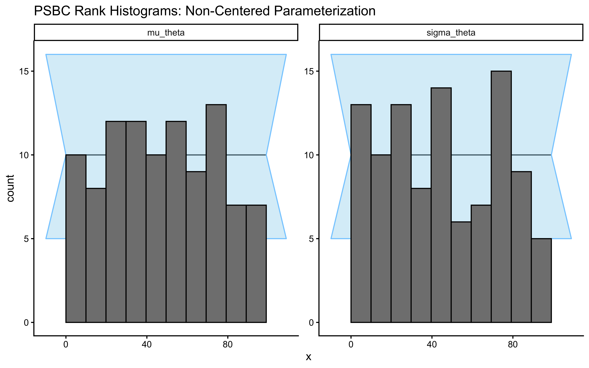
# 1. Extract the lightweight stats dataframe from the SBC object
sbc_stats_df <- psbc_res_ncp$stats
# 2. Filter for the population-level parameters you care about
# (e.g., mu_alpha, mu_beta, rho, or even sigma[1])
recovery_df <- sbc_stats_df |>
filter(variable %in% c("mu_theta", "sigma_theta"))
# 3. Create the Parameter Recovery Identity Plot
p_sbc_recovery <- ggplot(recovery_df, aes(x = simulated_value, y = median)) +
# The Identity Line (Perfect Recovery)
geom_abline(intercept = 0, slope = 1, linetype = "dashed", color = "gray50", linewidth = 1) +
# The Posterior Estimates with 90% Credible Intervals
geom_errorbar(aes(ymin = q5, ymax = q95), width = 0, alpha = 0.3, color = "steelblue") +
geom_point(color = "midnightblue", alpha = 0.7, size = 2) +
# Facet by parameter
facet_wrap(~variable, scales = "free") +
labs(
title = "Parameter Recovery (Extracted Directly from SBC)",
subtitle = "Points represent the posterior median. Bars are 90% Credible Intervals.",
x = "True Generative Value (Drawn from Prior)",
y = "Posterior Median Estimate"
) +
theme_classic() +
theme(strip.background = element_rect(fill = "gray95", color = NA))
print(p_sbc_recovery)
# 4. Quantify the Recovery (Correlation and RMSE)
recovery_metrics <- recovery_df |>
group_by(variable) |>
summarize(
Pearson_r = cor(simulated_value, median),
RMSE = sqrt(mean((simulated_value - median)^2)),
.groups = "drop"
)
cat("=== PARAMETER RECOVERY QUANTIFICATION ===\n")## === PARAMETER RECOVERY QUANTIFICATION ===##
##
## |variable | Pearson_r| RMSE|
## |:-----------|---------:|-----:|
## |mu_theta | 0.215| 0.132|
## |sigma_theta | 0.421| 0.105|diags_psbc_cp <- psbc_res_cp$backend_diagnostics
diags_psbc_ncp <- psbc_res_ncp$backend_diagnostics
psbc_cp_fail_rate <- mean(diags_psbc_cp$n_divergent > 0) * 100
psbc_ncp_fail_rate <- mean(diags_psbc_ncp$n_divergent > 0) * 100
cat("=== POSTERIOR SBC (LOCAL) DIVERGENCE RATES ===\n")## === POSTERIOR SBC (LOCAL) DIVERGENCE RATES ===## CP Failure Rate: 0 %## NCP Failure Rate: 0 %7.4.13 Comparing CP and NCP: Global Fragility vs. Local Efficiency
The CP did not seem to perform too bad, but it broke down when doing SBC. We therefore reparameterized the model by decoupling the sampling of individual and population level parameters (from CP to NCP). This fundamentally altered how the Hamiltonian Monte Carlo (NUTS) algorithm explores the posterior manifold.
We saw that NCP took slightly longer to run and was less efficient in sampling (< ESS). We then ran extensive SBC both sampling the simulations from the priors (global calibration) and sampling the simulations from the fitted posteriors (local calibration).
By comparing global calibration (Prior SBC) against local calibration (Posterior SBC), we have mathematically mapped the boundary conditions of these parameterizations.
Integration Stability and Global Fragility (Divergences): In CP, sparse data forces the sampler into the infinite curvature of Neal’s Funnel. As proven by our Prior SBC failure rates, CP is globally fragile; it regularly diverged across the broad generative prior space whenever the true population variance (\(\sigma_\theta\)) was small. NCP, conversely, decouples the parameters. The sampler explores a standard, isotropic Gaussian space (\(z \sim \text{Normal}(0, 1)\)) where the curvature is constant, completely immunizing the model against Neal’s Funnel and dropping global divergences to zero.
Sampling Efficiency and Local Vulnerability (ESS and Speed): Because the NCP geometry is smooth and well-behaved in data-sparse regimes, the Hamiltonian integrator can take massive, efficient step sizes, causing the Effective Sample Size (ESS) to skyrocket. However, as our Posterior SBC proved, NCP is locally vulnerable to the Data Funnel (or “Reverse Funnel”). In the specific neighborhood of our simulated data, the likelihood was highly informative and tightly constrained the posterior. CP navigated this sharp likelihood peak effortlessly. NCP, however, was forced to blindly explore a broad standard normal prior, only to find that the data violently rejected almost all of it, causing its ESS to plummet.
Stationarity (\(\hat{R}\)): While both models can achieve \(\hat{R} < 1.01\) under ideal local conditions, NCP achieves it reliably across the entire prior space, ensuring all Markov chains mix seamlessly regardless of the underlying data-generating universe.
The Geometric Trade-off: When CP Wins Given the global safety of NCP, it is tempting to conclude that we should always use the Non-Centered Parameterization. This is mathematically incorrect. The choice between CP and NCP is a strict geometric trade-off governed by the density of your data.
** The Data-Poor Regime (Use NCP): When trial counts (\(N_j\)) are low or population variance (\(\sigma_\theta\)) is small, the prior dominates the likelihood. This creates Neal’s Funnel in the CP space. NCP thrives here because it decouples the parameters, allowing the sampler to easily and safely explore the prior geometry.
** The Data-Rich Regime (Use CP): Consider a scenario where every agent completes \(10,000\) trials. The likelihood becomes massively informative, crushing the uncertainty around \(\theta_{\text{logit}, j}\) into a tiny, tight peak.If we use CP, the sampler effortlessly navigates this tight, data-driven likelihood space. If we use NCP, the sampler attempts to explore the broad \(z \sim \text{Normal}(0,1)\) prior, only to find that almost the entire space is immediately rejected by the highly restrictive likelihood. This makes NCP highly inefficient, resulting in massive autocorrelation, low ESS, and high computational time.
In other words, there is no universal panacea in cognitive modeling. We do not engage in blind “tinkering” to get our models to fit. Instead, we adhere to the Iterative Bayesian Workflow: we fit the model, deploy a strict diagnostic battery to identify the exact geometric failure (prior-dominated funnels vs. data-dominated funnels), and apply the mathematically appropriate parameterization.
Because typical cognitive tasks (like our Matching Pennies game) involve relatively sparse data (\(N_j \approx 100\)) and substantial population-level shrinkage, we will utilize the Non-Centered Parameterization as our default architecture as we proceed to construct the more complex Memory and WSLS agents.
7.5 The Epistemic Showdown: Visualizing Shrinkage
We have theorized about the dangers of ignoring population structure (Complete Pooling) and the dangers of ignoring noise in small samples (No Pooling). In a rigorous Bayesian workflow, we do not rely on intuition; we compute the alternatives and visualize the geometric differences.We will quickly define and fit the two extreme models using our strictly typed stan_data_centered. The complete and no-pooling models are included here solely as visual contrasts — they serve as the “wrong answer” endpoints that make the partial pooling solution legible. A full diagnostic battery on these two models would be redundant: complete pooling is trivially identifiable (one parameter, well-conditioned), and no-pooling is structurally identical to J independent Ch. 5 models we already validated. The NCP model, which actually matters, passed its full battery above.
7.5.1 The Complete Pooling Model (Underfitting)
This model assumes all agents are identical clones. The population variance is forced to exactly \(0\). We estimate a single, universal bias parameter.
stan_full_pooling_code <- "
data {
int<lower=1> N;
array[N] int<lower=0, upper=1> h;
}
parameters {
real theta_logit; // A single parameter for the entire universe
}
model {
target += normal_lpdf(theta_logit | 0, 1.5);
target += bernoulli_logit_lpmf(h | theta_logit);
}
"
stan_file_full <- here::here("stan", "ch6_biased_full_pooling.stan")
writeLines(stan_full_pooling_code, stan_file_full)
mod_full <- cmdstan_model(stan_file_full)
fit_full_path <- here::here("simmodels", "ch6_fit_full_pool.rds")
if (regenerate_simulations || !file.exists(fit_full_path)) {
fit_full <- mod_full$sample(
data = list(N = stan_data_centered$N, h = stan_data_centered$h),
seed = 123, chains = 4, parallel_chains = 4, refresh = 0
)
fit_full$save_object(fit_full_path)
} else {
fit_full <- readRDS(fit_full_path)
}
full_pool_est <- posterior::summarise_draws(fit_full$draws("theta_logit"), "median")$median7.5.2 The No Pooling Model (Overfitting)
This model assumes every agent is a completely isolated island. The population variance is implicitly assumed to be \(\infty\). We estimate an independent parameter for each agent, equipped only with a static, weakly informative prior.
stan_no_pooling_code <- "
data {
int<lower=1> N;
int<lower=1> J;
array[N] int<lower=1, upper=J> agent;
array[N] int<lower=0, upper=1> h;
}
parameters {
vector[J] theta_logit; // J completely independent parameters
}
model {
// Static prior: No hierarchical learning
target += normal_lpdf(theta_logit | 0, 1.5);
target += bernoulli_logit_lpmf(h | theta_logit[agent]);
}
"
stan_file_no <- here::here("stan", "ch6_biased_no_pooling.stan")
writeLines(stan_no_pooling_code, stan_file_no)
mod_no <- cmdstan_model(stan_file_no)
# Fit the No Pooling model
fit_no_path <- here::here("simmodels", "ch6_fit_no_pool.rds")
if (regenerate_simulations || !file.exists(fit_no_path)) {
fit_no <- mod_no$sample(
data = stan_data_centered,
seed = 123, chains = 4, parallel_chains = 4, refresh = 0
)
fit_no$save_object(fit_no_path)
} else {
fit_no <- readRDS(fit_no_path)
}
no_pool_summary <- posterior::summarise_draws(fit_no$draws("theta_logit"), "median") |>
mutate(agent_id = as.integer(str_extract(variable, "(?<=\\[)\\d+(?=\\])"))) |>
rename(theta_no_pool = median)7.5.3 The Geometry of Shrinkage
We now have three distinct sets of inferences: * No Pooling: The raw, isolated estimates (highly vulnerable to the noise of low \(N_j\)). * Complete Pooling: The rigid, universal average (blind to genuine individual differences). * Partial Pooling: Our hierarchical NCP model estimates (the precision-weighted Bayesian compromise).
To truly evaluate the epistemological value of these models, we must plot them not just against each other, but against the True Generative Parameters (the hidden reality we simulated in R). We will also extract the naive arithmetic mean of the No Pooling estimates to contrast it with the precision-weighted Partial Pooling mean.
# 1. Extract the Partial Pooling Population and Individual Estimates (from the NCP model)
mu_partial_pool_est <- posterior::summarise_draws(fit_ncp$draws("mu_theta"), "median")$median
partial_pool_summary <- posterior::summarise_draws(fit_ncp$draws("theta_logit"), "median") |>
mutate(agent_id = as.integer(str_extract(variable, "(?<=\\[)\\d+(?=\\])"))) |>
rename(theta_partial_pool = median)
# 2. Calculate the No Pooling Mean (simple arithmetic average of the isolated estimates)
no_pool_mean_est <- mean(no_pool_summary$theta_no_pool)
# 3. Calculate the True Generative Mean (The actual center of our simulated universe)
true_mean_est <- mean(true_agent_params$theta_logit)
# 4. Combine into a single dataframe, including the TRUE generative parameters
comparison_df <- no_pool_summary |>
select(agent_id, theta_no_pool) |>
left_join(
partial_pool_summary |> select(agent_id, theta_partial_pool),
by = "agent_id"
) |>
# Bring in the ground truth
left_join(
true_agent_params |> select(agent_id, n_trials, theta_true = theta_logit),
by = "agent_id"
) |>
# Sort agents by their No Pooling estimate for a cleaner visual curve
arrange(theta_no_pool) |>
mutate(rank = row_number())
# The Ultimate Epistemic Plot
ggplot(comparison_df) +
# --- POPULATION AVERAGES (Mapped to linetype for a clean legend) ---
geom_hline(aes(yintercept = no_pool_mean_est, linetype = "No Pooling Mean"),
color = "darkorange", linewidth = 0.8) +
geom_hline(aes(yintercept = full_pool_est, linetype = "Complete Pooling Mean"),
color = "darkred", linewidth = 0.8) +
geom_hline(aes(yintercept = mu_partial_pool_est, linetype = "Partial Pooling Mean (\U03BC)"),
color = "steelblue", linewidth = 1.2) +
geom_hline(aes(yintercept = true_mean_est, linetype = "True Generative Mean"),
color = "black", linewidth = 0.8) +
# --- INDIVIDUAL ESTIMATES ---
# Shrinkage Vectors (from No Pool to Partial Pool)
geom_segment(aes(x = rank, xend = rank,
y = theta_no_pool, yend = theta_partial_pool),
color = "gray65", arrow = arrow(length = unit(0.1, "cm"))) +
# True Generative Parameters (Black Crosses)
geom_point(aes(x = rank, y = theta_true, color = "True Value"),
shape = 4, size = 2, stroke = 1) +
# No Pooling Estimates (Open Circles)
geom_point(aes(x = rank, y = theta_no_pool, color = "No Pooling", size = n_trials),
shape = 1, stroke = 1.2) +
# Partial Pooling Estimates (Solid Points)
geom_point(aes(x = rank, y = theta_partial_pool, color = "Partial Pooling", size = n_trials),
alpha = 0.8) +
# --- SCALES & THEMES ---
scale_linetype_manual(
name = "Population Averages",
values = c(
"True Generative Mean" = "solid",
"Partial Pooling Mean (\U03BC)" = "dotted",
"Complete Pooling Mean" = "dashed",
"No Pooling Mean" = "dotdash"
)
) +
scale_color_manual(
name = "Individual Estimates",
values = c(
"True Value" = "black",
"No Pooling" = "darkorange",
"Partial Pooling" = "steelblue"
)
) +
labs(
title = "Bayesian Shrinkage: Partial Pooling vs. the Extremes",
subtitle = "Arrows show shrinkage from No Pooling → Partial Pooling. Longest arrows = fewest trials. Partial pooling lands closest to truth (black solid line).",
x = "Agents (Sorted by No-Pooling Estimate)",
y = "Estimated Bias Parameter (Logit Scale)",
size = "Trial Count (N_j)"
) +
theme(
axis.text.x = element_blank(),
axis.ticks.x = element_blank(),
legend.position = "right"
)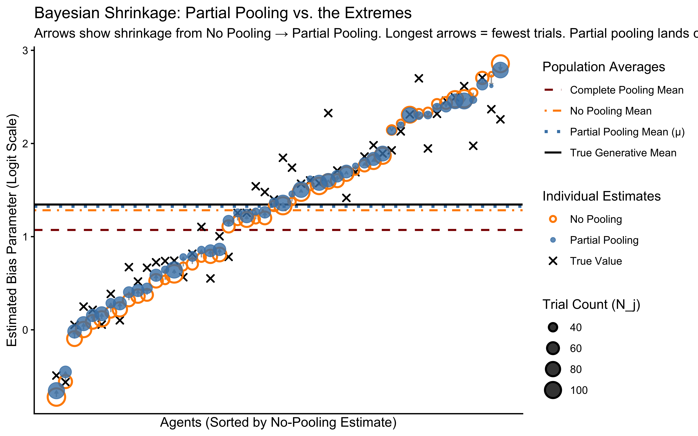
Study this plot carefully. It contains the entire epistemological justification for hierarchical modeling, visible across two dimensions: the horizontal population averages and the individual agent estimates.
7.5.4 The Horizontal Lines: The Quartet of Population Means
True Generative Mean (Solid Black): The actual center of our simulated universe. This is the structural reality we are trying to recover.
No Pooling Mean (Dot-dash Orange): The unweighted arithmetic average of the isolated estimates. Because it treats all agents equally, it is highly susceptible to being dragged away from the truth by extreme outliers with very little data.
Complete Pooling Mean (Dashed Red): The unweighted average of all trials. Because it ignores agent boundaries, it allows participants who completed massive numbers of trials to disproportionately pull the center of gravity toward themselves.
Partial Pooling Mean (\(\mu_\theta\), Dotted Blue): The precision-weighted compromise. By mathematically down-weighting the noisy, low-\(N_j\) agents, it reliably lands closest to the true generative mean.
7.5.5 The Points and Arrows: Information-Weighted Regularization
The Overfitting Extremes: Look at the tails of the graph. The orange open circles (No Pooling) are extreme. If we trusted No Pooling, we would conclude these agents have massive, almost deterministic biases.
The Power of the Prior: The solid blue dots (Partial Pooling) are systematically pulled inward. The hierarchical model “knows” that extremely high or low values are mathematically unlikely given the behavior of the rest of the cohort.
The Calibration of Skepticism: Look at the size of the dots, representing the trial count (\(N_j\)). The longest arrows (most aggressive shrinkage) almost exclusively belong to the smallest dots. When an agent has sparse data, the posterior relies heavily on the population prior. The largest dots barely move; when an agent has massive amounts of data, the likelihood overwhelms the prior, allowing them to remain safely extreme.
7.6 The Memory Agent: Two Correlated Individual Differences
7.6.1 Introduction
The Biased Agent established the full Bayesian workflow for a single individual-level parameter: simulate, fit, diagnose, recover, calibrate. It also taught us, the hard way, that the Centered Parameterization fails when population variance is small, and that the Non-Centered Parameterization resolves this by decoupling individual and population parameters geometrically. We proceed to the Memory Agent with both of those lessons in hand.
The Memory Agent is structurally richer. Recall from Chapter 3 its decision rule. On each trial \(i\), agent \(j\) maintains a running average of the opponent’s past choices \(m_{ij}\) and uses it as a predictive signal:
\[h_{ij} \sim \text{Bernoulli}(\text{logit}^{-1}(\alpha_j + \beta_j \cdot \text{logit}(m_{ij})))\]
\[m_{ij} = \frac{1}{i-1}\sum_{k=1}^{i-1} o_{kj}\]
There are now two individual-level parameters per agent: \(\alpha_j\), the baseline directional bias, and \(\beta_j\), the sensitivity to opponent history. They need not vary independently across the population. An agent who has a strong directional tendency might also track the opponent more aggressively — or might not. Fitting two separate univariate hierarchical models forecloses this question before the data can answer it. We model the parameters jointly.
Experimental design: the reversal paradigm. In Ch. 5 we discovered that fitting the memory model to a constant-bias opponent produces a strong positive correlation between bias and beta in the posterior — both parameters explain the same rightward tendency and cannot be told apart. The reversal learning design (opponent plays 80% right for trials 1–120, then 20% right for trials 121–240) breaks this confound: in the second phase, a pure-bias agent continues right while a memory agent flips left, providing the discriminating contrast the two-parameter model needs. We therefore use the reversal schedule saved in Ch. 5 as the shared opponent sequence for all J agents here.
7.6.1.1 The Bivariate Population Distribution
\[\begin{pmatrix} \alpha_j \\ \beta_j \end{pmatrix} \sim \mathcal{N}_2\!\left(\boldsymbol{\mu},\, \boldsymbol{\Sigma}\right), \quad \boldsymbol{\Sigma} = \operatorname{diag}(\boldsymbol{\sigma})\, \Omega\, \operatorname{diag}(\boldsymbol{\sigma}), \quad \Omega = \begin{pmatrix} 1 & \rho \\ \rho & 1 \end{pmatrix}\]
This decomposition separates how much individuals differ on each cognitive dimension (\(\sigma_\alpha\), \(\sigma_\beta\)) from how those dimensions covary (\(\rho\)). The scalar \(\rho \in (-1, 1)\) is the key new inferential target.
7.6.1.2 The LKJ Prior
We need a prior on the correlation matrix \(\Omega\). Stan provides the LKJ distribution (Lewandowski, Kurowicka, and Joe, 2009), with a single shape parameter \(\eta > 0\):
\[\Omega \sim \text{LKJ}(\eta) \quad \propto \quad (\det \Omega)^{\eta - 1}\]
When \(\eta = 1\) the distribution is uniform over valid correlation matrices. When \(\eta > 1\) mass concentrates toward the identity, encoding the prior belief that parameters tend to vary independently unless the data argue otherwise. For a \(2 \times 2\) matrix, the marginal on \(\rho\) reduces to a rescaled Beta: \(\rho \sim 2 \cdot \text{Beta}(\eta, \eta) - 1\). With our default \(\eta = 2\), the prior is unimodal at zero and weakly regularizes against extreme correlations.
Stan samples the lower-triangular Cholesky factor \(\mathbf{L}_\Omega\) (declared as cholesky_factor_corr[2]) under the lkj_corr_cholesky(eta) prior, recovering \(\Omega = \mathbf{L}_\Omega \mathbf{L}_\Omega^\top\) in generated quantities. This parameterization is unconstrained on its natural manifold.
7.6.1.3 Non-Centered Parameterization
The scalar NCP from the biased agent (\(\theta_j = \mu + z_j \cdot \sigma\)) generalizes directly. We introduce a \(2 \times J\) matrix of independent standard normals:
\[z_{kj} \sim \mathcal{N}(0, 1) \text{ i.i.d.}, \qquad \begin{pmatrix}\alpha_j \\ \beta_j\end{pmatrix} = \begin{pmatrix}\mu_\alpha \\ \mu_\beta\end{pmatrix} + \operatorname{diag}(\boldsymbol{\sigma})\,\mathbf{L}_\Omega\,\mathbf{z}_j\]
The sampler traverses the flat, isotropic space of \(\mathbf{Z}\), whose geometry is entirely independent of \(\boldsymbol{\sigma}\) and \(\Omega\). Neal’s Funnel is structurally impossible.

(#fig:hierarchical_memory_dag)Standard Plate Notation (left) and Kruschke-Style Notation (right) for the Hierarchical Memory Agent. The correlation node Omega and the bivariate MVN distinguish this model from the biased agent.
7.6.2 Phase 1: Generative Plausibility of the Memory Agent
Before writing any Stan code, we construct the forward generative model in R. This code must strictly mirror the mathematical hierarchy above.
One design decision deserves explicit justification. The memory signal \(m_{ij}\) is a deterministic function of the opponent’s past choices. We could compute it inside Stan’s transformed data block, but this executes a nested loop on every leapfrog step of every chain. Instead, we pre-compute the vector opp_rate_prev in R once and pass it as data. This reduces the memory calculation to a single vectorized pass before fitting begins, at zero loss of model fidelity.
The simulation function must also mirror the NCP Stan model exactly. We draw \(\mathbf{z}_j \sim \mathcal{N}(\mathbf{0}, \mathbf{I}_2)\) and apply the Cholesky transform, exactly as the Stan model will. For a \(2 \times 2\) correlation matrix with off-diagonal \(\rho\), the lower Cholesky factor is:
\[\mathbf{L}_\Omega = \begin{pmatrix} 1 & 0 \\ \rho & \sqrt{1-\rho^2} \end{pmatrix}\]
We sample \(\rho\) from the LKJ(2) marginal: \(\rho \sim 2 \cdot \text{Beta}(2, 2) - 1\).
In accordance with the rigorous Bayesian workflow, the simulation function is designed to either:
Draw all hyperparameters directly from the stated priors (for Prior Predictive Checks).
Accept fixed ground-truth hyperparameters (for Parameter Recovery).
#' Simulate Hierarchical Memory Agents
#'
#' @param n_agents Integer, number of agents (J).
#' @param n_trials_min Integer, minimum trials per agent.
#' @param n_trials_max Integer, maximum trials per agent.
#' @param mu_alpha Numeric, population mean baseline bias (logit scale). NULL draws from prior.
#' @param mu_beta Numeric, population mean memory sensitivity. NULL draws from prior.
#' @param sigma_alpha Numeric, population SD of alpha. NULL draws from prior.
#' @param sigma_beta Numeric, population SD of beta. NULL draws from prior.
#' @param rho Numeric, population correlation alpha-beta. NULL draws from LKJ(2).
#' @param opponent_choices Integer vector of length >= max(n_trials_max).
#' If provided, every agent plays a consecutive prefix of this fixed
#' sequence (realistic: all participants face the same opponent).
#' If NULL, generates independent Bernoulli draws using opponent_rate.
#' @param opponent_rate Numeric in (0,1). Used only when opponent_choices
#' is NULL. Default 0.7.
#' @param seed Integer, for exact computational reproducibility.
#'
#' @return A tidy tibble containing both latent parameters and observed choices.
simulate_hierarchical_memory <- function(
n_agents = 50,
n_trials_min = 20,
n_trials_max = 120,
mu_alpha = NULL,
mu_beta = NULL,
sigma_alpha = NULL,
sigma_beta = NULL,
rho = NULL,
opponent_choices = NULL,
opponent_rate = 0.7,
seed = NULL
) {
if (!is.null(seed)) set.seed(seed)
# 1. Sample hyperparameters from priors if not provided
if (is.null(mu_alpha)) mu_alpha <- rnorm(1, 0, 1)
if (is.null(mu_beta)) mu_beta <- rnorm(1, 0, 1)
if (is.null(sigma_alpha)) sigma_alpha <- rexp(1, 1)
if (is.null(sigma_beta)) sigma_beta <- rexp(1, 1)
# LKJ(2) marginal on rho for 2x2 = 2*Beta(2,2) - 1
if (is.null(rho)) rho <- 2 * rbeta(1, 2, 2) - 1
# 2. Construct the lower-triangular Cholesky factor L_Omega
L_Omega <- matrix(c(1, rho, 0, sqrt(1 - rho^2)), nrow = 2, ncol = 2)
# 3. Sample individual parameters via the NCP transform (mirrors Stan exactly)
# Z is 2 x J; Scale = diag(sigma) %*% L_Omega
Z <- matrix(rnorm(2 * n_agents), nrow = 2)
Scale <- diag(c(sigma_alpha, sigma_beta)) %*% L_Omega
# indiv_params is J x 2: column 1 = alpha_j, column 2 = beta_j
indiv_params <- t(c(mu_alpha, mu_beta) + Scale %*% Z)
# 4. Simulate trial-level data
n_trials_vec <- sample(n_trials_min:n_trials_max, n_agents, replace = TRUE)
sim_data <- map_dfr(seq_len(n_agents), function(j) {
n_t <- n_trials_vec[j]
alpha_j <- indiv_params[j, 1]
beta_j <- indiv_params[j, 2]
if (!is.null(opponent_choices)) {
# Shared reversal schedule: agent plays the first n_t steps of the
# fixed sequence. Agents who leave early see only the first phase.
stopifnot(length(opponent_choices) >= n_t)
opp_choices <- opponent_choices[seq_len(n_t)]
} else {
opp_choices <- rbinom(n_t, 1, opponent_rate)
}
# Pre-compute running opponent rate BEFORE each trial (strict t-1 history).
# Trial 1 has no history: initialize to 0.5 (uninformative).
# Clip to [0.01, 0.99] so logit(opp_rate_prev) is always finite.
opp_rate_prev <- numeric(n_t)
opp_rate_prev[1] <- 0.5
if (n_t > 1) {
raw_rates <- cumsum(opp_choices[-n_t]) / seq_len(n_t - 1)
opp_rate_prev[-1] <- pmax(0.01, pmin(0.99, raw_rates))
}
logit_p <- alpha_j + beta_j * qlogis(opp_rate_prev)
agent_choices <- rbinom(n_t, 1, plogis(logit_p))
tibble(
agent_id = j,
trial = seq_len(n_t),
n_trials = n_t,
choice = agent_choices,
opp_rate_prev = opp_rate_prev,
true_alpha = alpha_j,
true_beta = beta_j
)
})
attr(sim_data, "hyperparameters") <- list(
mu_alpha = mu_alpha, mu_beta = mu_beta,
sigma_alpha = sigma_alpha, sigma_beta = sigma_beta,
rho = rho
)
sim_data
}7.6.2.1 Executing the Prior Predictive Check: The Joint Population Cloud
For a bivariate model, the most revealing prior predictive display is a scatter of individual \((\alpha_j, \beta_j)\) pairs across multiple prior universes. This simultaneously reveals how dispersed individual differences are (\(\sigma_\alpha\), \(\sigma_\beta\)), how correlated the two cognitive dimensions tend to be (\(\rho\)), and whether any prior universe generates implausible populations (e.g., \(|\beta_j| > 8\), meaning the memory signal completely overrides choice).
# Generate 12 prior universes
prior_sims_mem <- map_dfr(1:12, function(sim_id) {
sim <- simulate_hierarchical_memory(
n_agents = 80, n_trials_min = 1, n_trials_max = 1,
seed = sim_id * 13
)
hp <- attr(sim, "hyperparameters")
sim |>
distinct(agent_id, true_alpha, true_beta) |>
mutate(simulation_id = paste("Prior Universe", sim_id))
})
ggplot(prior_sims_mem, aes(x = true_alpha, y = true_beta)) +
geom_point(alpha = 0.4, size = 0.9, color = "steelblue") +
geom_vline(xintercept = 0, linetype = "dashed", color = "gray60", linewidth = 0.4) +
geom_hline(yintercept = 0, linetype = "dashed", color = "gray60", linewidth = 0.4) +
facet_wrap(~simulation_id, ncol = 4) +
labs(
title = "Prior Predictive Checks: Implied Joint Population Distributions",
subtitle = "Populations generated by mu ~ N(0,1), sigma ~ Exp(1), Omega ~ LKJ(2)",
x = expression("Baseline bias " * alpha[j] * " (logit scale)"),
y = expression("Memory sensitivity " * beta[j])
)
A healthy prior generates a range of cloud shapes — some circular (low \(|\rho|\)), some elongated and tilted (high \(|\rho|\)), some compact (low \(\sigma\)), some diffuse (high \(\sigma\)). No prior universe should collapse all agents to a point or place all agents at implausibly extreme values.
7.6.3 Phase 2: Data Preparation and the NCP Stan Model
Having established from the biased agent workflow that NCP is our default architecture for cognitive tasks with sparse per-agent data, we implement it directly. We skip the Centered Parameterization entirely.
#' Prepare Memory Agent Data for Stan
#'
#' @param sim_data Tibble from simulate_hierarchical_memory().
#' @return A named list formatted for CmdStanR.
prep_stan_data_memory <- function(sim_data) {
list(
N = nrow(sim_data),
J = length(unique(sim_data$agent_id)),
agent = sim_data$agent_id,
h = sim_data$choice,
opp_rate_prev = sim_data$opp_rate_prev
)
}
# --- Load the reversal learning schedule from Ch. 5 ---
# This 240-trial sequence (80% right → reversal → 20% right) was validated
# in Ch. 5 to cleanly identify bias and beta. All agents play the same
# opponent schedule, with variable trial counts (80–240 trials).
reversal_obj <- readRDS(here("simdata", "05_reversal_data.rds"))
opponent_reversal <- reversal_obj$opponent_choices # 240-element integer vector
cat("Loaded reversal schedule from Ch. 5:",
length(opponent_reversal), "trials |",
sum(opponent_reversal[1:120]), "right in phase 1 |",
sum(opponent_reversal[121:240]), "right in phase 2\n")## Loaded reversal schedule from Ch. 5: 240 trials | 93 right in phase 1 | 23 right in phase 2# --- Generate hierarchical memory data using the reversal schedule ---
sim_data_memory <- simulate_hierarchical_memory(
n_agents = 50,
n_trials_min = 80, # Minimum: agents see at least the first phase
n_trials_max = 240, # Maximum: agents complete both phases
mu_alpha = 0.0, # No systematic directional baseline
mu_beta = 1.5, # Moderate positive memory tracking
sigma_alpha = 0.3,
sigma_beta = 0.5,
rho = 0.3, # Mild positive correlation
opponent_choices = opponent_reversal, # <-- reversal schedule from Ch. 5
seed = 1981
)
stan_data_memory <- prep_stan_data_memory(sim_data_memory)
cat(sprintf(
"Hierarchical memory data: %d agents, %d total trials, %d–%d trials per agent\n",
stan_data_memory$J,
stan_data_memory$N,
min(sim_data_memory$n_trials),
max(sim_data_memory$n_trials)
))## Hierarchical memory data: 50 agents, 8058 total trials, 84–237 trials per agent7.6.3.1 Stan Model: Hierarchical Memory Agent (NCP)
The only new structural element relative to the biased agent NCP is the bivariate extension. Instead of a scalar \(z_j\), we have a \(2 \times J\) matrix \(\mathbf{Z}\). Instead of scaling by a single \(\sigma\), we apply diag_pre_multiply(sigma, L_Omega) — which computes \(\operatorname{diag}(\boldsymbol{\sigma})\mathbf{L}_\Omega\) and produces the full Cholesky scale matrix encoding both marginal SDs and the correlation structure.
stan_memory_ncp_code <- "
// Hierarchical Memory Agent Model (Non-Centered Parameterization)
// -------------------------------------------------------------------
// alpha_j (baseline bias) and beta_j (memory sensitivity) are jointly
// drawn from a bivariate Normal. NCP decouples sampling geometry from
// the population parameters, preventing Neal's Funnel.
data {
int<lower=1> N; // Total observations across all agents
int<lower=1> J; // Number of agents
array[N] int<lower=1, upper=J> agent; // Agent index per trial
array[N] int<lower=0, upper=1> h; // Observed binary choices
// Pre-computed running average of opponent choices, clipped to [0.01, 0.99].
vector<lower=0.01, upper=0.99>[N] opp_rate_prev;
}
parameters {
// Population-level parameters
real mu_alpha; // Population mean baseline bias (logit scale)
real mu_beta; // Population mean memory sensitivity
vector<lower=0>[2] sigma; // Marginal SDs: sigma[1] = sigma_alpha, sigma[2] = sigma_beta
// Cholesky factor of the 2x2 correlation matrix. Prior: Omega ~ LKJ(2).
cholesky_factor_corr[2] L_Omega;
// Individual-level parameters (NCP): 2 x J matrix of standard normals.
// Row 1 = alpha offsets, row 2 = beta offsets.
matrix[2, J] z;
}
transformed parameters {
// Reconstruct cognitive parameters from z-space via the Cholesky transform.
// diag_pre_multiply(sigma, L_Omega) = diag(sigma) * L_Omega (2x2 matrix)
// Multiplying by z (2xJ) and transposing gives J x 2.
matrix[J, 2] indiv_params;
{
matrix[2, J] deviations = diag_pre_multiply(sigma, L_Omega) * z;
for (j in 1:J) {
indiv_params[j, 1] = mu_alpha + deviations[1, j];
indiv_params[j, 2] = mu_beta + deviations[2, j];
}
}
}
model {
// Hyperpriors
target += normal_lpdf(mu_alpha | 0, 1);
target += normal_lpdf(mu_beta | 0, 1);
target += exponential_lpdf(sigma | 1);
target += lkj_corr_cholesky_lpdf(L_Omega | 2);
// Individual-level prior (NCP): geometry fully decoupled from population params
target += std_normal_lpdf(to_vector(z));
// Likelihood
vector[N] logit_p;
for (i in 1:N) {
logit_p[i] = indiv_params[agent[i], 1]
+ indiv_params[agent[i], 2] * logit(opp_rate_prev[i]);
}
target += bernoulli_logit_lpmf(h | logit_p);
}
generated quantities {
// Recover the full correlation matrix and the scalar rho
matrix[2, 2] Omega = multiply_lower_tri_self_transpose(L_Omega);
real rho = Omega[1, 2];
// Individual parameters on natural scales
vector[J] alpha = indiv_params[, 1];
vector[J] beta_mem = indiv_params[, 2];
// Prior log-density (required by priorsense)
real lprior = normal_lpdf(mu_alpha | 0, 1)
+ normal_lpdf(mu_beta | 0, 1)
+ exponential_lpdf(sigma | 1)
+ lkj_corr_cholesky_lpdf(L_Omega | 2)
+ std_normal_lpdf(to_vector(z));
// Prior draws for prior-posterior update plots
real mu_alpha_prior = normal_rng(0, 1);
real mu_beta_prior = normal_rng(0, 1);
real sigma_alpha_prior = exponential_rng(1);
real sigma_beta_prior = exponential_rng(1);
// LKJ(2) marginal on rho: 2*Beta(2,2) - 1
real rho_prior = 2.0 * beta_rng(2.0, 2.0) - 1.0;
// Predictive checks and pointwise log-likelihood
vector[N] log_lik;
array[N] int h_post_rep;
array[N] int h_prior_rep;
// Build a prior-drawn population for h_prior_rep
cholesky_factor_corr[2] L_Omega_prior = lkj_corr_cholesky_rng(2, 2.0);
vector[2] sigma_prior = [sigma_alpha_prior, sigma_beta_prior]';
matrix[2, J] z_prior;
for (j in 1:J) { z_prior[1,j] = normal_rng(0,1); z_prior[2,j] = normal_rng(0,1); }
matrix[J, 2] indiv_prior;
{
matrix[2, J] dev_prior = diag_pre_multiply(sigma_prior, L_Omega_prior) * z_prior;
for (j in 1:J) {
indiv_prior[j, 1] = mu_alpha_prior + dev_prior[1, j];
indiv_prior[j, 2] = mu_beta_prior + dev_prior[2, j];
}
}
for (i in 1:N) {
int j = agent[i];
real lp_post = indiv_params[j,1] + indiv_params[j,2] * logit(opp_rate_prev[i]);
real lp_prior = indiv_prior[j,1] + indiv_prior[j,2] * logit(opp_rate_prev[i]);
log_lik[i] = bernoulli_logit_lpmf(h[i] | lp_post);
h_post_rep[i] = bernoulli_logit_rng(lp_post);
h_prior_rep[i] = bernoulli_logit_rng(lp_prior);
}
}
"
stan_file_memory_ncp <- here::here("stan", "ch6_multilevel_memory_ncp.stan")
writeLines(stan_memory_ncp_code, stan_file_memory_ncp)
mod_memory_ncp <- cmdstan_model(stan_file_memory_ncp)Two Stan details are worth noting. First, the local block { matrix[2,J] deviations = ...; } in transformed parameters confines the intermediate matrix to local scope, preventing it from appearing in the parameter output. Second, lkj_corr_cholesky_rng(2, 2.0) in generated quantities draws a full Cholesky factor from the LKJ(2) prior. This is the correct way to generate prior predictive data — unlike the Beta marginal trick, it generalizes to the \(3 \times 3\) case we will need for the WSLS agent.
7.6.3.2 Fitting the model
fit_memory_path <- here::here("simmodels", "ch6_fit_memory_ncp.rds")
# Initialize at prior means. L_Omega starts at the identity Cholesky (rho = 0).
# This is a neutral, numerically stable starting point for the correlation geometry.
J_val_mem <- stan_data_memory$J
# A 4-chain dumb list for the Memory Model
init_memory_list <- list(
list(mu_alpha = rnorm(1, 0, 0.3), mu_beta = rnorm(1, 0, 0.3), sigma = abs(rnorm(2, 0, 0.3)) + 0.1, L_Omega = matrix(c(1, 0, 0, 1), nrow=2), z = matrix(0, nrow=2, ncol=J_val_mem)),
list(mu_alpha = rnorm(1, 0, 0.3), mu_beta = rnorm(1, 0, 0.3), sigma = abs(rnorm(2, 0, 0.3)) + 0.1, L_Omega = matrix(c(1, 0, 0, 1), nrow=2), z = matrix(0, nrow=2, ncol=J_val_mem)),
list(mu_alpha = rnorm(1, 0, 0.3), mu_beta = rnorm(1, 0, 0.3), sigma = abs(rnorm(2, 0, 0.3)) + 0.1, L_Omega = matrix(c(1, 0, 0, 1), nrow=2), z = matrix(0, nrow=2, ncol=J_val_mem)),
list(mu_alpha = rnorm(1, 0, 0.3), mu_beta = rnorm(1, 0, 0.3), sigma = abs(rnorm(2, 0, 0.3)) + 0.1, L_Omega = matrix(c(1, 0, 0, 1), nrow=2), z = matrix(0, nrow=2, ncol=J_val_mem))
)
if (regenerate_simulations || !file.exists(fit_memory_path)) {
fit_memory <- mod_memory_ncp$sample(
data = stan_data_memory,
seed = 123,
chains = 4,
parallel_chains = 4,
iter_warmup = 1000,
iter_sampling = 1000,
init = init_memory_list,
adapt_delta = 0.90,
max_treedepth = 12,
refresh = 0
)
fit_memory$save_object(fit_memory_path)
} else {
fit_memory <- readRDS(fit_memory_path)
}We raise adapt_delta to 0.90. The bivariate NCP is well-behaved globally, but the correlation parameter \(\rho\) introduces a curved direction that can require longer leapfrog trajectories. The higher target acceptance rate forces the dual-averaging algorithm to find a smaller step size, reducing integration error along this direction. If max_treedepth warnings appear (distinct from divergences), raise max_treedepth further — do not raise adapt_delta in response to those.
7.6.3.3 Assessing the fitting process
Even if the Stan compiler finishes without explicit warnings, our workflow demands that we systematically verify the geometry of the posterior and the efficiency of the sampler.
## $num_divergent
## [1] 0 0 0 0
##
## $num_max_treedepth
## [1] 0 0 0 0
##
## $ebfmi
## [1] 0.7753663 0.6990873 0.7302008 0.7121430We are looking for strict zeros in num_divergent. With the NCP, this should hold. Any divergences here are a signal that adapt_delta needs further adjustment, the priors are misspecified, or there is a structural model issue.
7.6.3.4 Chain Mixing and Stationarity (\(\hat{R}\))
draws_memory <- fit_memory$draws()
mcmc_trace(
draws_memory,
pars = c("mu_alpha", "mu_beta", "sigma[1]", "sigma[2]", "rho"),
np = nuts_params(fit_memory)
) +
labs(
title = "Trace Plots: Population Parameters (Memory Agent NCP)",
subtitle = "All five population-level parameters, including rho. Stationary chains expected throughout."
)
draws_memory |>
subset_draws(variable = c("mu_alpha", "mu_beta", "sigma[1]", "sigma[2]", "rho",
"alpha[1]", "alpha[2]", "beta_mem[1]", "beta_mem[2]")) |>
summarise_draws(default_convergence_measures()) |>
knitr::kable(digits = 3)| variable | rhat | ess_bulk | ess_tail |
|---|---|---|---|
| mu_alpha | 1.003 | 4536.130 | 3219.616 |
| mu_beta | 1.000 | 5530.353 | 3365.868 |
| sigma[1] | 1.001 | 3094.326 | 2956.688 |
| sigma[2] | 1.000 | 1998.533 | 2940.560 |
| rho | 1.000 | 1646.126 | 2270.844 |
| alpha[1] | 1.002 | 5728.964 | 3161.287 |
| alpha[2] | 1.002 | 6427.232 | 3574.001 |
| beta_mem[1] | 1.001 | 5303.794 | 2973.740 |
| beta_mem[2] | 1.000 | 5467.761 | 3269.354 |
The potential scale reduction factor (\(\hat{R}\)) must be below 1.01 for all parameters. The correlation parameter rho is informed only by covariation across agents, not within any individual agent’s trial sequence, so its ESS will be lower than the marginal parameters. ESS > 400 remains our threshold. An ESS below 200 for rho warrants investigation of the correlation manifold geometry.
7.6.3.4.1 Effective Sample Size (ESS)
Monitor ess_tail for sigma[1] and sigma[2]. Population SDs can develop mild funnel-like behavior even under NCP when the likelihood is highly informative about individual parameters, because the \(z_j\) draws must simultaneously explain many agents. If ess_tail is low for the sigmas but ess_bulk is acceptable, raising adapt_delta further or running more warmup iterations is the correct response.
7.6.3.5 Posterior Parameter Correlations
mcmc_pairs(
draws_memory,
pars = c("mu_alpha", "mu_beta", "sigma[1]", "sigma[2]", "rho"),
np = nuts_params(fit_memory),
diag_fun = "dens",
off_diag_fun = "hex"
)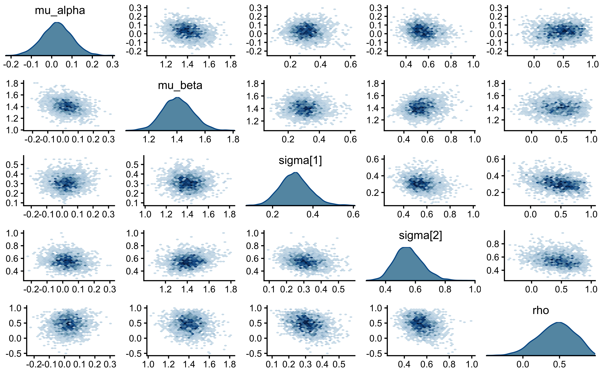
The critical panels are \((\sigma_\alpha, \mu_\alpha)\) and \((\sigma_\beta, \mu_\beta)\). Under the CP biased agent, these showed triangular wedges — the Neal’s Funnel signature. Under NCP, they should be roughly elliptical. Any triangular shape here would be unexpected and would require investigation.
7.6.4 Prior-Posterior Update Checks: Quantifying Learning
draws_df_memory <- as_draws_df(draws_memory)
# Extract true generative hyperparameters saved as attributes
true_hp <- attr(sim_data_memory, "hyperparameters")
true_pop_mem <- tibble(
parameter = c("mu_alpha", "mu_beta", "sigma_alpha", "sigma_beta", "rho"),
true_value = c(true_hp$mu_alpha, true_hp$mu_beta,
true_hp$sigma_alpha, true_hp$sigma_beta, true_hp$rho)
)
# Reshape: split on the underscore immediately before "posterior" or "prior"
pp_update_mem <- draws_df_memory |>
select(
mu_alpha_posterior = mu_alpha, mu_alpha_prior,
mu_beta_posterior = mu_beta, mu_beta_prior,
sigma_alpha_posterior = `sigma[1]`, sigma_alpha_prior,
sigma_beta_posterior = `sigma[2]`, sigma_beta_prior,
rho_posterior = rho, rho_prior
) |>
pivot_longer(
everything(),
names_to = c("parameter", "distribution"),
names_sep = "_(?=posterior|prior)"
)
ggplot(pp_update_mem, aes(x = value)) +
geom_histogram(aes(fill = distribution), alpha = 0.6, color = NA, bins = 60) +
geom_vline(
data = true_pop_mem,
aes(xintercept = true_value, linetype = "True Value"),
color = "darkred", linewidth = 1
) +
facet_wrap(~parameter, scales = "free") +
scale_fill_manual(
name = "Distribution",
values = c("prior" = "gray70", "posterior" = "steelblue")
) +
scale_linetype_manual(
name = "Ground Truth",
values = c("True Value" = "dashed")
) +
labs(
title = "Prior-Posterior Update Checks: Memory Agent",
x = "Parameter Value",
y = "Count"
)
A healthy update shows a posterior significantly narrower than the prior and comfortably contained within the prior’s mass. The rho panel carries the central new scientific information. If the posterior on \(\rho\) is essentially indistinguishable from the LKJ(2) prior, the data do not contain sufficient information to identify the population-level correlation — this can happen with small \(J\) or short trial sequences. In that case, report the parameter as unidentified, not the prior as the conclusion. A clearly narrowed posterior constitutes genuine evidence about the cognitive architecture of the population.
3### Posterior Predictive Checks (PPC): Generative Adequacy
y_obs_mem <- as.numeric(stan_data_memory$h)
agent_idx_mem <- as.numeric(stan_data_memory$agent)
y_rep_mem <- fit_memory$draws("h_post_rep", format = "matrix")
n_sample_mem <- 12
sampled_agents_mem <- sample(unique(agent_idx_mem), n_sample_mem)
keep_mask_mem <- agent_idx_mem %in% sampled_agents_mem
prop_right <- function(x) mean(x)
ppc_stat_grouped(
y = y_obs_mem[keep_mask_mem],
yrep = y_rep_mem[, keep_mask_mem],
group = agent_idx_mem[keep_mask_mem],
stat = "prop_right"
) +
labs(
title = "Posterior Predictive Checks: Agent-Level Choice Rates (Subset)",
subtitle = paste("Showing", n_sample_mem, "randomly sampled agents. Dark line: Observed. Histogram: Predicted."),
x = "Proportion of 'Right' Choices"
)
7.6.4.1 Calibration and Recovery
We have proven the model fits the data and generates plausible predictions. Now we must prove the parameters we extract are actually the true parameters that generated the data. For a bivariate model, recovery must be assessed at both levels: all five population parameters, and the individual \((\alpha_j, \beta_j)\) pairs jointly.
7.6.4.1.1 Individual-Level Recovery
recovery_alpha <- draws_memory |>
subset_draws(variable = "alpha") |>
summarise_draws() |>
mutate(agent_id = as.integer(str_extract(variable, "(?<=\\[)\\d+(?=\\])")))
recovery_beta <- draws_memory |>
subset_draws(variable = "beta_mem") |>
summarise_draws() |>
mutate(agent_id = as.integer(str_extract(variable, "(?<=\\[)\\d+(?=\\])")))
true_agent_params_mem <- sim_data_memory |>
distinct(agent_id, n_trials, true_alpha, true_beta)
recovery_mem_df <- true_agent_params_mem |>
left_join(recovery_alpha |> select(agent_id, alpha_est = median, alpha_q5 = q5, alpha_q95 = q95), by = "agent_id") |>
left_join(recovery_beta |> select(agent_id, beta_est = median, beta_q5 = q5, beta_q95 = q95), by = "agent_id")
p_rec_alpha <- ggplot(recovery_mem_df, aes(x = true_alpha, y = alpha_est)) +
geom_abline(intercept = 0, slope = 1, linetype = "dashed", color = "gray50") +
geom_errorbar(aes(ymin = alpha_q5, ymax = alpha_q95), width = 0, alpha = 0.5, color = "steelblue") +
geom_point(aes(size = n_trials), color = "midnightblue", alpha = 0.8) +
labs(
title = expression("Recovery: Baseline Bias " * alpha[j]),
x = "True alpha (logit scale)", y = "Posterior Median", size = "N trials"
)
p_rec_beta <- ggplot(recovery_mem_df, aes(x = true_beta, y = beta_est)) +
geom_abline(intercept = 0, slope = 1, linetype = "dashed", color = "gray50") +
geom_errorbar(aes(ymin = beta_q5, ymax = beta_q95), width = 0, alpha = 0.5, color = "steelblue") +
geom_point(aes(size = n_trials), color = "midnightblue", alpha = 0.8) +
labs(
title = expression("Recovery: Memory Sensitivity " * beta[j]),
x = "True beta", y = "Posterior Median", size = "N trials"
)
p_rec_alpha + p_rec_beta + plot_layout(guides = "collect")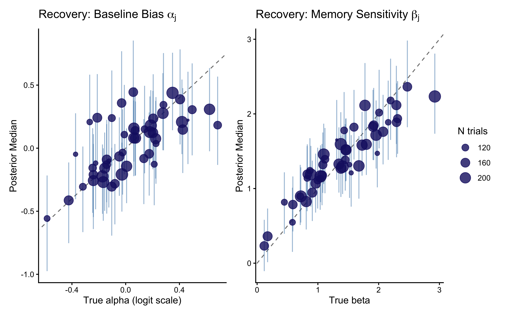
Recovery for \(\beta_j\) is typically noisier than for \(\alpha_j\) at any given trial count. The memory signal \(\text{logit}(m_{ij})\) starts at zero (the \(\text{logit}(0.5) = 0\) initialization) and becomes informative only as the cumulative opponent history diverges from 0.5. Agents with few trials show stronger shrinkage toward \(\mu_\beta = 1.5\) — not toward zero, but toward the estimated population mean, which is the appropriate regularization given what the rest of the cohort tells us about the population.
7.6.4.2 Prior sensitivity
sens_results_mem <- powerscale_sensitivity(
fit_memory,
variable = c("mu_alpha", "mu_beta", "sigma[1]", "sigma[2]", "rho")
)
cat("=== PRIOR SENSITIVITY DIAGNOSTICS: MEMORY AGENT ===\n")## === PRIOR SENSITIVITY DIAGNOSTICS: MEMORY AGENT ===## Sensitivity based on cjs_dist
## Prior selection: all priors
## Likelihood selection: all data
##
## variable prior likelihood diagnosis
## mu_alpha 0.033 0.075 -
## mu_beta 0.058 0.076 potential prior-data conflict
## sigma[1] 0.361 0.208 potential prior-data conflict
## sigma[2] 0.517 0.124 potential prior-data conflict
## rho 0.034 0.197 -ps_seq_mem <- powerscale_sequence(
fit_memory,
variable = c("mu_alpha", "mu_beta", "sigma[1]", "sigma[2]", "rho")
)
powerscale_plot_dens(ps_seq_mem) +
labs(
title = "Prior Sensitivity: Density Perturbation (Memory Agent)",
subtitle = "Does scaling the prior or likelihood drastically alter our beliefs about the population?"
)
powerscale_plot_quantities(ps_seq_mem) +
labs(
title = "Prior Sensitivity: Parameter Estimates (Memory Agent)",
subtitle = "Horizontal lines: baseline posterior bounds. Deviations indicate sensitivity."
)
Pay particular attention to the rho panel. Because the correlation is identified only from across-agent covariation, it has fewer effective observations than the marginal population parameters. If rho shows strong sensitivity to prior scaling, the data contain limited information about the correlation structure and the LKJ prior is doing meaningful regularization.
7.6.4.3 Simulation-Based Calibration (SBC)
Parameter recovery on a single dataset is anecdotal. We must prove that the sampler is globally unbiased across the entire prior space.
sbc_memory_path <- here::here("simmodels", "ch6_sbc_memory.rds")
generate_sbc_dataset_memory <- function(n_agents = 50, n_trials_min = 80, n_trials_max = 240) {
# Use the same reversal schedule as the main fit.
# opponent_reversal is available in the chapter environment from Edit 6.16.
sim <- simulate_hierarchical_memory(
n_agents = n_agents,
n_trials_min = n_trials_min,
n_trials_max = n_trials_max,
opponent_choices = opponent_reversal
)
hp <- attr(sim, "hyperparameters")
list(
variables = list(
mu_alpha = hp$mu_alpha,
mu_beta = hp$mu_beta,
`sigma[1]` = hp$sigma_alpha,
`sigma[2]` = hp$sigma_beta,
rho = hp$rho,
alpha = sim |> distinct(agent_id, true_alpha) |> arrange(agent_id) |> pull(true_alpha),
beta_mem = sim |> distinct(agent_id, true_beta) |> arrange(agent_id) |> pull(true_beta)
),
generated = prep_stan_data_memory(sim)
)
}
generator_memory <- SBC_generator_function(
generate_sbc_dataset_memory,
n_agents = 50, n_trials_min = 30, n_trials_max = 120
)
backend_memory <- SBC_backend_cmdstan_sample(
mod_memory_ncp,
iter_warmup = 1000, iter_sampling = 1000, chains = 1, refresh = 0
)
if (regenerate_simulations || !file.exists(sbc_memory_path)) {
sbc_datasets_memory <- generate_datasets(generator_memory, 100)
plan(sequential)
#future::plan(future::multisession, workers = 4)
sbc_results_memory <- compute_SBC(datasets = sbc_datasets_memory, backend = backend_memory,
keep_fits = FALSE)
saveRDS(
list(datasets = sbc_datasets_memory, results = sbc_results_memory),
sbc_memory_path
)
} else {
sbc_mem_obj <- readRDS(sbc_memory_path)
sbc_datasets_memory <- sbc_mem_obj$datasets
sbc_results_memory <- sbc_mem_obj$results
}
plot_rank_hist(sbc_results_memory, variables = c("mu_alpha", "mu_beta", "sigma[1]", "sigma[2]", "rho")) +
labs(title = "SBC Rank Histograms: Memory Agent NCP")
plot_ecdf_diff(sbc_results_memory, variables = c("mu_alpha", "mu_beta", "sigma[1]", "sigma[2]", "rho")) +
labs(
title = "SBC ECDF Difference: Memory Agent NCP",
subtitle = "Deviation from the diagonal indicates miscalibration."
)
# 1. Extract the lightweight stats dataframe from the SBC object
sbc_stats_df <- sbc_results_memory$stats
# 2. Filter for the population-level parameters you care about
# (e.g., mu_alpha, mu_beta, rho, or even sigma[1])
recovery_df <- sbc_stats_df |>
filter(variable %in% c("mu_alpha", "mu_beta", "sigma[1]", "sigma[2]", "rho"))
# 3. Create the Parameter Recovery Identity Plot
p_sbc_recovery <- ggplot(recovery_df, aes(x = simulated_value, y = median)) +
# The Identity Line (Perfect Recovery)
geom_abline(intercept = 0, slope = 1, linetype = "dashed", color = "gray50", linewidth = 1) +
# The Posterior Estimates with 90% Credible Intervals
geom_errorbar(aes(ymin = q5, ymax = q95), width = 0, alpha = 0.3, color = "steelblue") +
geom_point(color = "midnightblue", alpha = 0.7, size = 2) +
# Facet by parameter
facet_wrap(~variable, scales = "free") +
labs(
title = "Parameter Recovery (Extracted Directly from SBC)",
subtitle = "Points represent the posterior median. Bars are 90% Credible Intervals.",
x = "True Generative Value (Drawn from Prior)",
y = "Posterior Median Estimate"
) +
theme_classic() +
theme(strip.background = element_rect(fill = "gray95", color = NA))
print(p_sbc_recovery)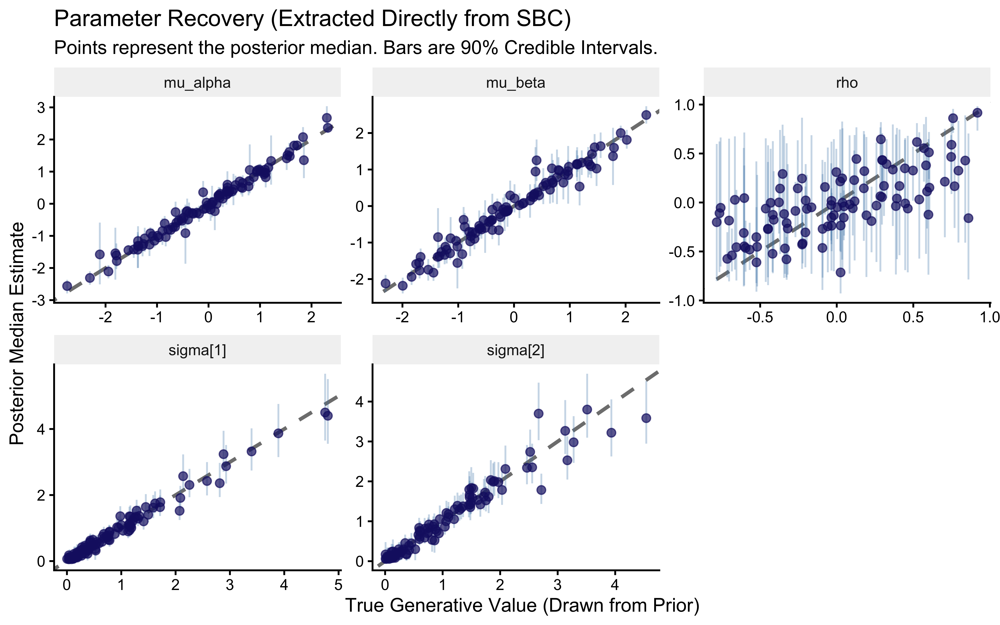
# 4. Quantify the Recovery (Correlation and RMSE)
recovery_metrics <- recovery_df |>
group_by(variable) |>
summarize(
Pearson_r = cor(simulated_value, median),
RMSE = sqrt(mean((simulated_value - median)^2)),
.groups = "drop"
)
cat("=== PARAMETER RECOVERY QUANTIFICATION ===\n")## === PARAMETER RECOVERY QUANTIFICATION ===##
##
## |variable | Pearson_r| RMSE|
## |:--------|---------:|-----:|
## |mu_alpha | 0.988| 0.162|
## |mu_beta | 0.977| 0.220|
## |rho | 0.673| 0.334|
## |sigma[1] | 0.988| 0.147|
## |sigma[2] | 0.969| 0.237|diags_memory <- sbc_results_memory$backend_diagnostics
mem_fail_rate <- mean(diags_memory$n_divergent > 0) * 100
diags_memory |>
ggplot(aes(x = n_divergent)) +
geom_histogram(binwidth = 1, fill = "darkred", alpha = 0.8) +
labs(
title = "Memory NCP Divergence Counts Across 200 SBC Universes",
subtitle = sprintf("%.0f%% of universes produced at least one divergence.", mem_fail_rate),
x = "Number of Divergent Transitions",
y = "Number of SBC Universes"
)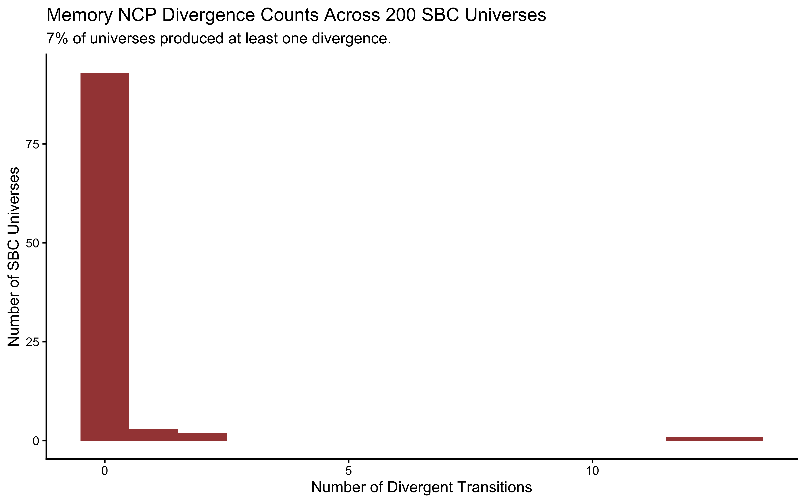
# Does any failure concentrate at small sigma values?
posterior::as_draws_df(sbc_datasets_memory$variables) |>
as_tibble() |>
mutate(sim_id = row_number()) |>
left_join(
diags_memory |> mutate(sim_id = row_number()) |> select(sim_id, n_divergent),
by = "sim_id"
) |>
mutate(had_divergence = n_divergent > 0) |>
ggplot(aes(x = `sigma[1]`, y = `sigma[2]`, color = had_divergence)) +
geom_point(alpha = 0.6, size = 1.5) +
scale_color_manual(
values = c("FALSE" = "steelblue", "TRUE" = "darkred"),
labels = c("FALSE" = "Clean", "TRUE" = "Divergent"),
name = NULL
) +
labs(
title = "Memory NCP: Where Do Divergences Occur?",
subtitle = "Any divergences should not concentrate at small sigma values (that would indicate residual funnel geometry).",
x = expression(sigma[alpha]), y = expression(sigma[beta])
)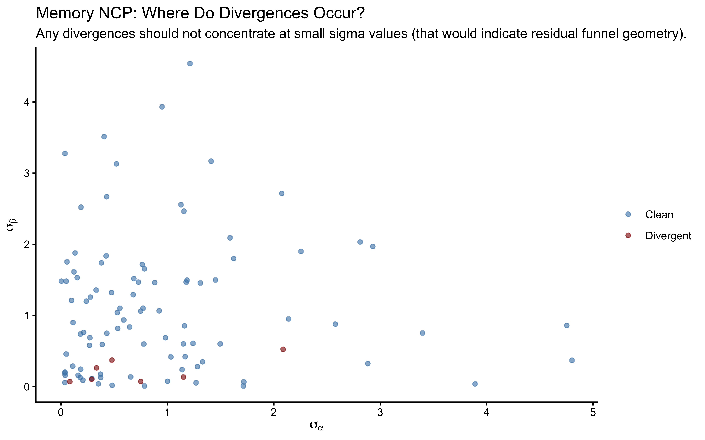
The rho rank histogram will typically have wider confidence bands than the marginal mean and SD histograms at \(N = 200\). This is expected: \(\rho\) is identified only from covariation across \(J = 50\) agents, so each SBC universe contributes one effective draw of \(\rho\) to the calibration check. Mild irregularity within the confidence envelope is statistical noise. Systematic U-shape or strong asymmetry would indicate a genuine calibration failure.
7.6.4.4 Cognitive Interpretation of \(\hat{\rho}\)
The posterior on \(\rho\) is the inferential result that distinguishes this model from two independent univariate hierarchical models.
\(\rho \approx 0\): Baseline tendency and memory-based opponent tracking are orthogonal individual differences. Studying one tells us nothing about the other.
\(\rho > 0\): Agents with a stronger directional baseline also tend to weight memory more heavily — consistent with a general exploitation tendency, where both parameters index willingness to depart from 50/50 in response to a signal.
\(\rho < 0\): Agents with a strong directional baseline tend to suppress memory use — a compensatory account in which prior commitment crowds out sensitivity to the opponent’s history.
None of these interpretations follow from the model alone. The model provides a calibrated posterior over \(\rho\). Cognitive theory provides the framework for deciding what that value means.
7.6.4.5 LOO for Model Comparison
We retain the LOO-CV score here for the model comparison section at the end of the chapter.
##
## Computed from 4000 by 8058 log-likelihood matrix.
##
## Estimate SE
## elpd_loo -4233.0 44.3
## p_loo 55.3 1.3
## looic 8465.9 88.6
## ------
## MCSE of elpd_loo is 0.1.
## MCSE and ESS estimates assume independent draws (r_eff=1).
##
## All Pareto k estimates are good (k < 0.7).
## See help('pareto-k-diagnostic') for details.# Save everything Ch. 7 needs for model comparison.
# Ch. 7 will load this object to avoid refitting.
ch6_exports_file <- here("simmodels", "06_memory_exports_for_ch7.rds")
saveRDS(
list(
fit_memory = fit_memory, # Fitted CmdStanR object
loo_memory = loo_memory, # Pre-computed LOO score
stan_data_memory = stan_data_memory, # Stan data list (reversal design)
sim_data_memory = sim_data_memory, # Full trial-level tibble
reversal_schedule = opponent_reversal # 240-trial opponent sequence
),
ch6_exports_file
)
cat("Ch. 6 exports saved to:", ch6_exports_file, "\n")## Ch. 6 exports saved to: /Users/au209589/Dropbox/Teaching/AdvancedCognitiveModeling23_book/simmodels/06_memory_exports_for_ch7.rds## Load in Ch. 7 with: readRDS(here('simmodels', '06_memory_exports_for_ch7.rds'))7.7 Conclusion: From One Agent to a Population
This chapter extended the Bayesian modeling workflow to multiple participants. The core ideas are:
- Partial pooling is not a compromise — it is the statistically correct way to combine information across individuals with unequal data, and it provably outperforms both extremes (as the shrinkage plot showed).
- Centered vs. non-centered parameterization is a geometric choice, not a philosophical one. CP fails when population variance is small (Neal’s Funnel); NCP fixes the global geometry but can be locally inefficient when data are very informative. SBC revealed which regime we are in.
- The reversal learning design is essential for the memory model. A constant-bias opponent makes
biasandbetastatistically inseparable; the reversal schedule provides the contrast that identifies them.
Coming up in Chapter 7: We have now validated two models — the hierarchical biased agent and the hierarchical memory agent — and computed LOO scores for both. Chapter 7 introduces model comparison: given that both models have passed validation, which one better predicts held-out data? The answer will use the LOO scores and the loo_compare() function from the loo package.